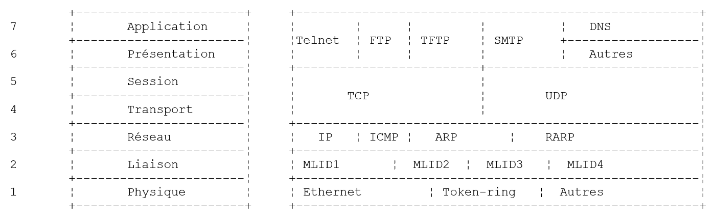
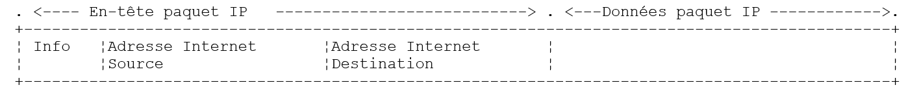
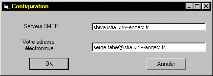
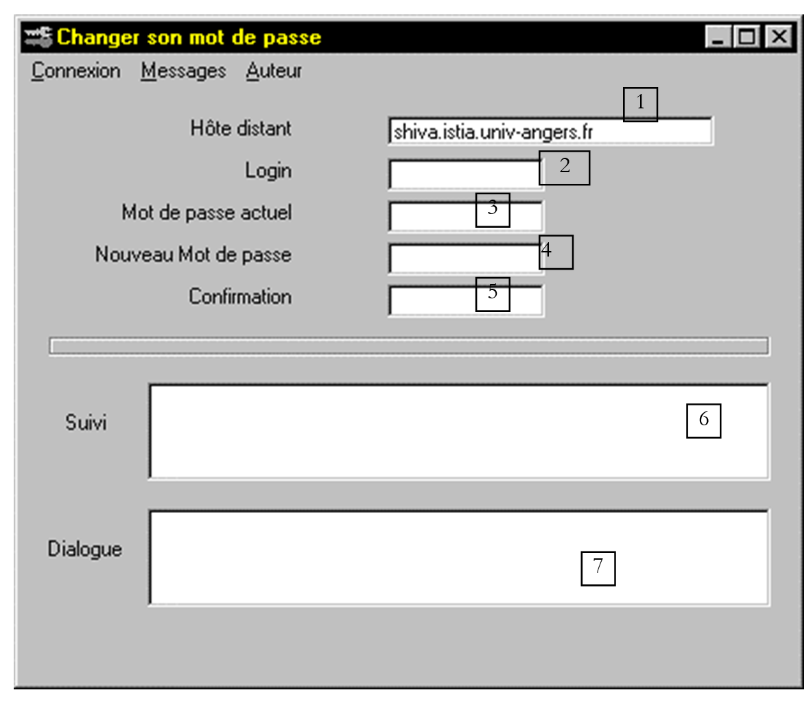

8. Programmation TCP-IP
8.1. Généralités
8.1.1. Les protocoles de l'Internet
Nous donnons ici une introduction aux protocoles de communication de l'Internet, appelés aussi suite de protocoles TCP/IP (Transfer Control Protocol / Internet Protocol), du nom des deux principaux protocoles. Il est bon que le lecteur ait une compréhension globale du fonctionnement des réseaux et notamment des protocoles TCP/IP avant d'aborder la construction d'applications distribuées.
Le texte qui suit est une traduction partielle d'un texte que l'on trouve dans le document "Lan Workplace for Dos - Administrator's Guide" de NOVELL, document du début des années 90.
Le concept général de créer un réseau d'ordinateurs hétérogènes vient de recherches effectuées par le DARPA (Defense Advanced Research Projects Agency) aux Etats-Unis. Le DARPA a développé la suite de protocoles connue sous le nom de TCP/IP qui permet à des machines hétérogènes de communiquer entre elles. Ces protocoles ont été testés sur un réseau appelé ARPAnet, réseau qui devint ultérieurement le réseau INTERNET. Les protocoles TCP/IP définissent des formats et des règles de transmission et de réception indépendants de l'organisation des réseaux et des matériels utilisés.
Le réseau conçu par le DARPA et géré par les protocoles TCP/IP est un réseau à commutation de paquets. Un tel réseau transmet l'information sur le réseau, en petits morceaux appelés paquets. Ainsi, si un ordinateur transmet un gros fichier, ce dernier sera découpé en petits morceaux qui seront envoyés sur le réseau pour être recomposés à destination. TCP/IP définit le format de ces paquets, à savoir :
- origine du paquet
- destination
- longueur
- type
8.1.2. Le modèle OSI
Les protocoles TCP/IP suivent à peu près le modèle de réseau ouvert appelé OSI (Open Systems Interconnection Reference Model) défini par l'ISO (International Standards Organisation). Ce modèle décrit un réseau idéal où la communication entre machines peut être représentée par un modèle à sept couches :

Chaque couche reçoit des services de la couche inférieure et offre les siens à la couche supérieure. Supposons que deux applications situées sur des machines A et B différentes veulent communiquer : elles le font au niveau de la couche Application. Elles n'ont pas besoin de connaître tous les détails du fonctionnement du réseau : chaque application remet l'information qu'elle souhaite transmettre à la couche du dessous : la couche Présentation. L'application n'a donc à connaître que les règles d'interfaçage avec la couche Présentation.
Une fois l'information dans la couche Présentation, elle est passée selon d'autres règles à la couche Session et ainsi de suite, jusqu'à ce que l'information arrive sur le support physique et soit transmise physiquement à la machine destination. Là, elle subira le traitement inverse de celui qu'elle a subi sur la machine expéditeur.
A chaque couche, le processus expéditeur chargé d'envoyer l'information, l'envoie à un processus récepteur sur l'autre machine apartenant à la même couche que lui. Il le fait selon certaines règles que l'on appelle le protocole de la couche. On a donc le schéma de communication final suivant :

Le rôle des différentes couches est le suivant :
|
Assure la transmission de bits sur un support physique. On trouve dans cette couche des équipements terminaux de traitement des données (E.T.T.D.) tels que terminal ou ordinateur, ainsi que des équipements de terminaison de circuits de données (E.T.C.D.) tels que modulateur/démodulateur, multiplexeur, concentrateur. Les points d'intérêt à ce niveau sont : .le choix du codage de l'information (analogique ou numérique) .le choix du mode de transmission (synchrone ou asynchrone). |
|
Masque les particularités physiques de la couche Physique. Détecte et corrige les erreurs de transmission. |
|
Gère le chemin que doivent suivre les informations envoyées sur le réseau. On appelle cela le routage : déterminer la route à suivre par une information pour qu'elle arrive à son destinataire. |
|
Permet la communication entre deux applications alors que les couches précédentes ne permettaient que la communication entre machines. Un service fourni par cette couche peut être le multiplexage : la couche transport pourra utiliser une même connexion réseau (de machine à machine) pour transmettre des informations appartenant à plusieurs applications. |
|
On va trouver dans cette couche des services permettant à une application d'ouvrir et de maintenir une session de travail sur une machine distante. |
|
Elle vise à uniformiser la représentation des données sur les différentes machines. Ainsi des données provenant d'une machine A, vont être "habillées" par la couche Présentation de la machine A, selon un format standard avant d'être envoyées sur le réseau. Parvenues à la couche Présentation de la machine destinatrice B qui les reconnaîtra grâce à leur format standard, elles seront habillées d'une autre façon afin que l'application de la machine B les reconnaisse. |
|
A ce niveau, on trouve les applications généralement proches de l'utilisateur telles que la messagerie électronique ou le transfert de fichiers. |
8.1.3. Le modèle TCP/IP
Le modèle OSI est un modèle idéal encore jamais réalisé. La suite de protocoles TCP/IP s'en approche sous la forme suivante :

Couche Physique
En réseau local, on trouve généralement une technologie Ethernet ou Token-Ring. Nous ne présentons ici que la technologie Ethernet.
Ethernet
C'est le nom donné à une technologie de réseaux locaux à commutation de paquets inventée à PARC Xerox au début des années 1970 et normalisée par Xerox, Intel et Digital Equipment en 1978. Le réseau est physiquement constitué d'un câble coaxial d'environ 1,27 cm de diamètre et d'une longueur de 500 m au plus. Il peut être étendu au moyen de répéteurs, deux machines ne pouvant être séparées par plus de deux répéteurs. Le câble est passif : tous les éléments actifs sont sur les machines raccordées au câble. Chaque machine est reliée au câble par une carte d'accès au réseau comprenant :
- un transmetteur (transceiver) qui détecte la présence de signaux sur le câble et convertit les signaux analogiques en signaux numérique et inversement.
- un coupleur qui reçoit les signaux numériques du transmetteur et les transmet à l'ordinateur pour traitement ou inversement.
Les caractéristiques principales de la technologie Ethernet sont les suivantes :
- Capacité de 10 Mégabits/seconde.
- Topologie en bus : toutes les machines sont raccordées au même câble

- Réseau diffusant - Une machine qui émet transfère des informations sur le câble avec l'adresse de la machine destinatrice. Toutes les machines raccordées reçoivent alors ces informations et seule celle à qui elles sont destinées les conserve.
- La méthode d'accès est la suivante : le transmetteur désirant émettre écoute le câble - il détecte alors la présence ou non d'une onde porteuse, présence qui signifierait qu'une transmission est en cours. C'est la technique CSMA (Carrier Sense Multiple Access). En l'absence de porteuse, un transmetteur peut décider de transmettre à son tour. Ils peuvent être plusieurs à prendre cette décision. Les signaux émis se mélangent : on dit qu'il y a collision. Le transmetteur détecte cette situation : en même temps qu'il émet sur le câble, il écoute ce qui passe réellement sur celui-ci. S'il détecte que l'information transitant sur le câble n'est pas celle qu'il a émise, il en déduit qu'il y a collision et il s'arrêtera d'émettre. Les autres transmetteurs qui émettaient feront de même. Chacun reprendra son émission après un temps aléatoire dépendant de chaque transmetteur. Cette technique est appelée CD (Collision Detect). La méthode d'accès est ainsi appelée CSMA/CD.
- un adressage sur 48 bits. Chaque machine a une adresse, appelée ici adresse physique, qui est inscrite sur la carte qui la relie au câble. On appelle cet adresse, l'adresse Ethernet de la machine.
Couche Réseau
Nous trouvons au niveau de cette couche, les protocoles IP, ICMP, ARP et RARP.
|
IP (Internet Protocol) |
Délivre des paquets entre deux noeuds du réseau |
|
ICMP (Internet Control Message Protocol) |
ICMP réalise la communication entre le programme du protocole IP d'une machine et celui d'une autre machine. C'est donc un protocole d'échange de messages à l'intérieur même du protocole IP. |
|
ARP (Address Resolution Protocol) |
fait la correspondance adresse Internet machine--> adresse physique machine |
|
RARP (Reverse Address Resolution Protocol) |
fait la correspondance adresse physique machine--> adresse Internet machine |
Couches Transport/Session
Dans cette couche, on trouve les protocoles suivants :
|
TCP (Transmission Control Protocol) |
Assure une remise fiable d'informations entre deux clients |
|
UDP (User Datagram Protocol) |
Assure une remise non fiable d'informations entre deux clients |
Couches Application/Présentation/Session
On trouve ici divers protocoles :
|
Emulateur de terminal permettant à une machine A de se connecter à une machine B en tant que terminal |
|
permet des transferts de fichiers |
|
permet des transferts de fichiers |
|
permet l'échange de messages entre utilisateurs du réseau |
|
transforme un nom de machine en adresse Internet de la machine |
|
créé par sun MicroSystems, il spécifie une représentation standard des données, indépendante des machines |
|
défini également par Sun, c'est un protocole de communication entre applications distantes, indépendant de la couche transport. Ce protocole est important : il décharge le programmeur de la connaissance des détails de la couche transport et rend les applications portables. Ce protocole s'appuie sur sur le protocole XDR |
|
toujours défini par Sun, ce protocole permet à une machine, de "voir" le système de fichiers d'une autre machine. Il s'appuie sur le protocole RPC précédent |
8.1.4. Fonctionnement des protocoles de l'Internet
Les applications développées dans l'environnement TCP/IP utilisent généralement plusieurs des protocoles de cet environnement. Un programme d'application communique avec la couche la plus élevée des protocoles. Celle-ci passe l'information à la couche du dessous et ainsi de suite jusqu'à arriver sur le support physique. Là, l'information est physiquement transférée à la machine destinatrice où elle retraversera les mêmes couches, en sens inverse cette fois-ci, jusqu'à arriver à l'application destinatrice des informations envoyées. Le schéma suivant montre le parcours de l'information :

Prenons un exemple : l'application FTP, définie au niveau de la couche Application et qui permet des transferts de fichiers entre machines.
- .L'application délivre une suite d'octets à transmettre à la couche transport.
- La couche transport découpe cette suite d'octets en segments TCP, et ajoute au début de chaque segment, le numéro de celui-ci. Les segments sont passés à la couche Réseau gouvernée par le protocole IP.
- La couche IP crée un paquet encapsulant le segment TCP reçu. En tête de ce paquet, elle place les adresses Internet des machines source et destination. Elle détermine également l'adresse physique de la machine destinatrice. Le tout est passé à la couche Liaison de données & Liaison physique, c'est à dire à la carte réseau qui couple la machine au réseau physique.
- Là, le paquet IP est encapsulé à son tour dans une trame physique et envoyé à son destinataire sur le câble.
- Sur la machine destinatrice, la couche Liaison de données & Liaison physique fait l'inverse : elle désencapsule le paquet IP de la trame physique et le passe à la couche IP.
- La couche IP vérifie que le paquet est correct : elle calcule une somme, fonction des bits reçus (checksum), somme qu'elle doit retrouver dans l'en-tête du paquet. Si ce n'est pas le cas, celui-ci est rejeté.
- Si le paquet est déclaré correct, la couche IP désencapsule le segment TCP qui s'y trouve et le passe au-dessus à la couche transport.
- La couche transport, couche TCP dans notre exemple, examine le numéro du segment afin de restituer le bon ordre des segments.
- Elle calcule également une somme de vérification pour le segment TCP. S'il est trouvé correct, la couche TCP envoie un accusé de réception à la machine source, sinon le segment TCP est refusé.
- Il ne reste plus à la couche TCP qu'à transmettre la partie données du segment à l'application destinatrice de celles-ci dans la couche du dessus.
8.1.5. Les problèmes d'adressage dans l'Internet
Un noeud d'un réseau peut être un ordinateur, une imprimante intelligente, un serveur de fichiers, n'importe quoi en fait pouvant communiquer à l'aide des protocoles TCP/IP. Chaque noeud a une adresse physique ayant un format dépendant du type du réseau. Sur un réseau Ethernet, l'adresse physique est codée sur 6 octets. Une adresse d'un réseau X25 est un nombre à 14 chiffres.
L'adresse Internet d'un noeud est une adresse logique : elle est indépendante du matériel et du réseau utilisé. C'est une adresse sur 4 octets identifiant à la fois un réseau local et un noeud de ce réseau. L'adresse Internet est habituellement représentée sous la forme de 4 nombres, valeurs des 4 octets, séparés par un point. Ainsi l'adresse de la machine Lagaffe de la faculté des Sciences d'Angers est notée 193.49.144.1 et celle de la machine Liny 193.49.144.9. On en déduira que l'adresse Internet du réseau local est 193.49.144.0. On pourra avoir jusqu'à 254 noeuds sur ce réseau.
Parce que les adresses Internet ou adresses IP sont indépendantes du réseau, une machine d'un réseau A peut communiquer avec une machine d'un réseau B sans se préoccuper du type de réseau sur lequel elle se trouve : il suffit qu'elle connaisse son adresse IP. Le protocole IP de chaque réseau se charge de faire la conversion adresse IP <--> adresse physique, dans les deux sens.
Les adresses IP doivent être toutes différentes. Des organismes officiels sont chargés de les distribuer. En fait, ces organismes délivrent une adresse pour des réseaux locaux, par exemple 193.49.144.0 pour le réseau de la faculté des sciences d'Angers. L'administrateur de ce réseau peut ensuite affecter les adresses IP 193.49.144.1 à 193.49.144.254 comme il l'entend. Cette adresse est généralement inscrite dans un fichier particulier de chaque machine reliée au réseau.
8.1.5.1. Les classes d'adresses IP
Une adresse IP est une suite de 4 octets notée souvent I1.I2.I3.I4, qui contient en fait deux adresses :
- l'adresse du réseau
- l'adresse d'un noeud de ce réseau
Selon la taille de ces deux champs, les adresses IP sont divisées en 3 classes : classes A, B et C.
Classe A
L'adresse IP : I1.I2.I3.I4 a la forme R1.N1.N2.N3 où
R1est l'adresse du réseau
N1.N2.N3est l'adresse d'une machine dans ce réseau
Plus exactement, la forme d'une adresse IP de classe A est la suivante :

L'adresse réseau est sur 7 bits et l'adresse du noeud sur 24 bits. On peut donc avoir 127 réseaux de classe A, chacun comportant jusqu'à 224 noeuds.
Classe B
Ici, l'adresse IP : I1.I2.I3.I4 a la forme R1.R2.N1.N2 où
R1.R2est l'adresse du réseau
N1.N2est l'adresse d'une machine dans ce réseau
Plus exactement, la forme d'une adresse IP de classe B est la suivante :

L'adresse du réseau est sur 2 octets (14 bits exactement) ainsi que celle du noeud. On peut donc avoir 214 réseaux de classe B chacun comportant jusqu'à 216 noeuds.
Classe C
Dans cette classe, l'adresse IP : I1.I2.I3.I4 a la forme R1.R2.R3.N1 où
R1.R2.R3est l'adresse du réseau
N1est l'adresse d'une machine dans ce réseau
Plus exactement, la forme d'une adresse IP de classe C est la suivante :

L'adresse réseau est sur 3 octets (moins 3 bits) et l'adresse du noeud sur 1 octet. On peut donc avoir 221 réseaux de classe C comportant jusqu'à 256 noeuds.
L'adresse de la machine Lagaffe de la faculté des sciences d'Angers étant 193.49.144.1, on voit que l'octet de poids fort vaut 193, c'est à dire en binaire 11000001. On en déduit que le réseau est de classe C.
Adresses réservées
.Certaines adresses IP sont des adresses de réseaux plutôt que des adresses de noeuds dans le réseau. Ce sont celles, où l'adresse du noeud est mise à 0. Ainsi, l'adresse 193.49.144.0 est l'adresse IP du réseau de la Faculté des Sciences d'Angers. En conséquence, aucun noeud d'un réseau ne peut avoir l'adresse zéro.
.Lorsque dans une adresse IP, l'adresse du noeud ne comporte que des 1, on a alors une adresse de diffusion : cette adresse désigne tous les noeuds du réseau.
.Dans un réseau de classe C, permettant théoriquement 28=256 noeuds, si on enlève les deux adresses interdites, on n'a plus que 254 adresses autorisées.
8.1.5.2. Les protocoles de conversion Adresse Internet <--> Adresse physique
Nous avons vu que lors d'une émission d'informations d'une machine vers une autre, celles-ci à la traversée de la couche IP étaient encapsulées dans des paquets. Ceux-ci ont la forme suivante :

Le paquet IP contient donc les adresses Internet des machines source et destination. Lorsque ce paquet va être transmis à la couche chargée de l'envoyer sur le réseau physique, d'autres informations lui sont ajoutées pour former la trame physique qui sera finalement envoyée sur le réseau. Par exemple, le format d'une trame sur un réseau Ethernet est le suivant :

Dans la trame finale, il y a l'adresse physique des machines source et destination. Comment sont-elles obtenues ?
La machine expéditrice connaissant l'adresse IP de la machine avec qui elle veut communiquer obtient l'adresse physique de celle-ci en utilisant un protocole particulier appelé ARP (Address Resolution Protocol).
- Elle envoie un paquet d'un type spécial appelé paquet ARP contenant l'adresse IP de la machine dont on cherche l'adresse physique. Elle a pris soin également d'y placer sa propre adresse IP ainsi que son adresse physique.
- Ce paquet est envoyé à tous les noeuds du réseau.
- Ceux-ci reconnaissent la nature spéciale du paquet. Le noeud qui reconnaît son adresse IP dans le paquet, répond en envoyant à l'expéditeur du paquet son adresse physique. Comment le peut-il ? Il a trouvé dans le paquet les adresses IP et physique de l'expéditeur.
- L'expéditeur reçoit donc l'adresse physique qu'il cherchait. Il la stocke en mémoire afin de pouvoir l'utiliser ultérieurement si d'autres paquets sont à envoyer au même destinataire.
L'adresse IP d'une machine est normalement inscrite dans l'un de ses fichiers qu'elle peut donc consulter pour la connaître. Cette adresse peut être changée : il suffit d'éditer le fichier. L'adresse physique elle, est inscrite dans une mémoire de la carte réseau et ne peut être changée.
Lorsqu'un administrateur désire d'organiser son réseau différemment, il peut être amené à changer les adresses IP de tous les noeuds et donc à éditer les différents fichiers de configuration des différents noeuds. Cela peut être fastidieux et une occasion d'erreurs s'il y a beaucoup de machines. Une méthode consiste à ne pas affecter d'adresse IP aux machines : on inscrit alors un code spécial dans le fichier dans lequel la machine devrait trouver son adresse IP. Découvrant qu'elle n'a pas d'adresse IP, la machine la demande selon un protocole appelé RARP (Reverse Address Resolution Protocol). Elle envoie alors sur un réseau un paquet spécial appelé paquet RARP, analogue au paquet ARP précédent, dans lequel elle met son adresse physique. Ce paquet est envoyé à tous les noeuds qui reconnaissent alors un paquet RARP. L'un d'entre-eux, appelé serveur RARP, possède un fichier donnant la correspondance adresse physique <--> adresse IP de tous les noeuds. Il répond alors à l'expéditeur du paquet RARP, en lui renvoyant son adresse IP. Un administrateur désirant reconfigurer son réseau, n'a donc qu'à éditer le fichier de correspondances du serveur RARP. Celui-ci doit normalement avoir une adresse IP fixe qu'il doit pouvoir connaître sans avoir à utiliser lui-même le protocole RARP.
8.1.6. La couche réseau dite couche IP de l'internet
Le protocole IP (Internet Protocol) définit la forme que les paquets doivent prendre et la façon dont ils doivent être gérés lors de leur émission ou de leur réception. Ce type de paquet particulier est appelé un datagramme IP. Nous l'avons déjà présenté :

L'important est qu'outre les données à transmettre, le datagramme IP contient les adresses Internet des machines source et destination. Ainsi la machine destinatrice sait qui lui envoie un message.
A la différence d'une trame de réseau qui a une longueur déterminée par les caractéristiques physiques du réseau sur lequel elle transite, la longueur du datagramme IP est elle fixée par le logiciel et sera donc la même sur différents réseaux physiques. Nous avons vu qu'en descendant de la couche réseau dans la couche physique le datagramme IP était encapsulé dans une trame physique. Nous avons donné l'exemple de la trame physique d'un réseau Ethernet :

Les trames physiques circulent de noeud en noeud vers leur destination qui peut ne pas être sur le même réseau physique que la machine expéditrice. Le paquet IP peut donc être encapsulé successivement dans des trames physiques différentes au niveau des noeuds qui font la jonction entre deux réseaux de type différent. Il se peut aussi que le paquet IP soit trop grand pour être encapsulé dans une trame physique. Le logiciel IP du noeud où se pose ce problème, décompose alors le paquet IP en fragments selon des règles précises, chacun d'eux étant ensuite envoyé sur le réseau physique. Ils ne seront réassemblés qu'à leur ultime destination.
8.1.6.1. Le routage
Le routage est la méthode d'acheminement des paquets IP à leur destination. Il y a deux méthodes : le routage direct et le routage indirect.
Routage direct
Le routage direct désigne l'acheminement d'un paquet IP directement de l'expéditeur au destinataire à l'intérieur du même réseau :
- La machine expéditrice d'un datagramme IP a l'adresse IP du destinataire.
- Elle obtient l'adresse physique de ce dernier par le protocole ARP ou dans ses tables, si cette adresse a déjà été obtenue.
- Elle envoie le paquet sur le réseau à cette adresse physique.
Routage indirect
Le routage indirect désigne l'acheminement d'un paquet IP à une destination se trouvant sur un autre réseau que celui auquel appartient l'expéditeur. Dans ce cas, les parties adresse réseau des adresses IP des machines source et destination sont différentes. La machine source reconnaît ce point. Elle envoie alors le paquet à un noeud spécial appelé routeur (router), noeud qui connecte un réseau local aux autres réseaux et dont elle trouve l'adresse IP dans ses tables, adresse obtenue initialement soit dans un fichier soit dans une mémoire permanente ou encore via des informations circulant sur le réseau.
Un routeur est attaché à deux réseaux et possède une adresse IP à l'intérieur de ces deux réseaux.

Dans notre exemple ci-dessus :
- Le réseau n° 1 a l'adresse Internet 193.49.144.0 et le réseau n° 2 l'adresse 193.49.145.0.
- A l'intérieur du réseau n° 1, le routeur a l'adresse 193.49.144.6 et l'adresse 193.49.145.3 à l'intérieur du réseau n° 2.
Le routeur a pour rôle de mettre le paquet IP qu'il reçoit et qui est contenu dans une trame physique typique du réseau n° 1, dans une trame physique pouvant circuler sur le réseau n° 2. Si l'adresse IP du destinataire du paquet est dans le réseau n° 2, le routeur lui enverra le paquet directement sinon il l'enverra à un autre routeur, connectant le réseau n° 2 à un réseau n° 3 et ainsi de suite.
8.1.6.2. Messages d'erreur et de contrôle
Toujours dans la couche réseau, au même niveau donc que le protocole IP, existe le protocole ICMP (Internet Control Message Protocol). Il sert à envoyer des messages sur le fonctionnement interne du réseau : noeuds en panne, embouteillage à un routeur, etc ... Les messages ICMP sont encapsulés dans des paquets IP et envoyés sur le réseau. Les couches IP des différents noeuds prennent les actions appropriées selon les messages ICMP qu'elles reçoivent. Ainsi, une application elle-même, ne voit jamais ces problèmes propres au réseau.
Un noeud utilisera les informations ICMP pour mettre à jour ses tables de routage.
8.1.7. La couche transport : les protocoles UDP et TCP
8.1.7.1. Le protocole UDP : User Datagram Protocol
Le protocole UDP permet un échange non fiable de données entre deux points, c'est à dire que le bon acheminement d'un paquet à sa destination n'est pas garanti. L'application, si elle le souhaite peut gérer cela elle-même, en attendant par exemple après l'envoi d'un message, un accusé de réception, avant d'envoyer le suivant.
Pour l'instant, au niveau réseau, nous avons parlé d'adresses IP de machines. Or sur une machine, peuvent coexister en même temps différents processus qui tous peuvent communiquer. Il faut donc indiquer, lors de l'envoi d'un message, non seulement l'adresse IP de la machine destinatrice, mais également le "nom" du processus destinataire. Ce nom est en fait un numéro, appelé numéro de port. Certains numéros sont réservés à des applications standard : port 69 pour l'application tftp (trivial file transfer protocol) par exemple.
Les paquets gérés par le protocole UDP sont appelés également des datagrammes. Ils ont la forme suivante :

Ces datagrammes seront encapsulés dans des paquets IP, puis dans des trames physiques.
8.1.7.2. Le protocole TCP : Transfer Control Protocol
Pour des communications sûres, le protocole UDP est insuffisant : le développeur d'applications doit élaborer lui-même un protocole lui permettant de détecter le bon acheminement des paquets.
Le protocole TCP (Transfer Control Protocol) évite ces problèmes. Ses caractéristiques sont les suivantes :
- Le processus qui souhaite émettre établit tout d'abord une connexion avec le processus destinataire des informations qu'il va émettre. Cette connexion se fait entre un port de la machine émettrice et un port de la machine réceptrice. Il y a entre les deux ports un chemin virtuel qui est ainsi créé et qui sera réservé aux deux seuls processus ayant réalisé la connexion.
- Tous les paquets émis par le processus source suivent ce chemin virtuel et arrivent dans l'ordre où ils ont été émis ce qui n'était pas garanti dans le protocole UDP puisque les paquets pouvaient suivre des chemins différents.
- L'information émise a un aspect continu. Le processus émetteur envoie des informations à son rhythme. Celles-ci ne sont pas nécessairement envoyées tout de suite : le protocole TCP attend d'en avoir assez pour les envoyer. Elles sont stockées dans une structure appelée segment TCP. Ce segment une fois rempli sera transmis à la couche IP où il sera encapsulé dans un paquet IP.
- Chaque segment envoyé par le protocole TCP est numéroté. Le protocole TCP destinataire vérifie qu'il reçoit bien les segments en séquence. Pour chaque segment correctement reçu, il envoie un accusé de réception à l'expéditeur.
- Lorsque ce dernier le reçoit, il l'indique au processus émetteur. Celui-ci peut donc savoir qu'un segment est arrivé à bon port, ce qui n'était pas possible avec le protocole UDP.
- Si au bout d'un certain temps, le protocole TCP ayant émis un segment ne reçoit pas d'accusé de réception, il retransmet le segment en question, garantissant ainsi la qualité du service d'acheminement de l'information.
- Le circuit virtuel établi entre les deux processus qui communiquent est full-duplex : cela signifie que l'information peut transiter dans les deux sens. Ainsi le processus destination peut envoyer des accusés de réception alors même que le processus source continue d'envoyer des informations. Cela permet par exemple au protocole TCP source d'envoyer plusieurs segments sans attendre d'accusé de réception. S'il réalise au bout d'un certain temps qu'il n'a pas reçu l'accusé de réception d'un certain segment n° n, il reprendra l'émission des segments à ce point.
8.1.8. La couche Applications
Au-dessus des protocoles UDP et TCP, existent divers protocoles standard :
TELNET
Ce protocole permet à un utilisateur d'une machine A du réseau de se connecter sur une machine B (appelée souvent machine hôte). TELNET émule sur la machine A un terminal dit universel. L'utilisateur se comporte donc comme s'il disposait d'un terminal connecté à la machine B. Telnet s'appuie sur le protocole TCP.
FTP : (File Transfer protocol)
Ce protocole permet l'échange de fichiers entre deux machines distantes ainsi que des manipulations de fichiers tels que des créations de répertoire par exemple. Il s'appuie sur le protocole TCP.
TFTP: (Trivial File Transfer Control)
Ce protocole est une variante de FTP. Il s'appuie sur le protocole UDP et est moins sophistiqué que FTP.
DNS : (Domain Name System)
Lorsqu'un utilisateur désire échanger des fichiers avec une machine distante, par FTP par exemple, il doit connaître l'adresse Internet de cette machine. Par exemple, pour faire du FTP sur la machine Lagaffe de l'université d'Angers, il faudrait lancer FTP comme suit : FTP 193.49.144.1
Cela oblige à avoir un annuaire faisant la correspondance machine <--> adresse IP. Probablement que dans cet annuaire les machines seraient désignées par des noms symboliques tels que :
machine DPX2/320 de l'université d'Angers
machine Sun de l'ISERPA d'Angers
On voit bien qu'il serait plus agréable de désigner une machine par un nom plutôt que par son adresse IP. Se pose alors le problème de l'unicité du nom : il y a des millions de machines interconnectées. On pourrait imaginer qu'un organisme centralisé attribue les noms. Ce serait sans doute assez lourd. Le contrôle des noms a été en fait distribué dans des domaines. Chaque domaine est géré par un organisme généralement très léger qui a toute liberté quant au choix des noms de machines. Ainsi les machines en France appartiennent au domaine fr, domaine géré par l'Inria de Paris. Pour continuer à simplifier les choses, on distribue encore le contrôle : des domaines sont créés à l'intérieur du domaine fr. Ainsi l'université d'Angers appartient au domaine univ-Angers. Le service gérant ce domaine a toute liberté pour nommer les machines du réseau de l'Université d'Angers. Pour l'instant ce domaine n'a pas été subdivisé. Mais dans une grande université comportant beaucoup de machines en réseau, il pourrait l'être.
La machine DPX2/320 de l'université d'Angers a été nommée Lagaffe alors qu'un PC 486DX50 a été nommé liny. Comment référencer ces machines de l'extérieur ? En précisant la hiérarchie des domaines auxquelles elles appartiennent. Ainsi le nom complet de la machine Lagaffe sera :
A l'intérieur des domaines, on peut utiliser des noms relatifs. Ainsi à l'intérieur du domaine fr et en dehors du domaine univ-Angers, la machine Lagaffe pourra être référencée par
Enfin, à l'intérieur du domaine univ-Angers, elle pourra être référencée simplement par
Une application peut donc référencer une machine par son nom. Au bout du compte, il faut quand même obtenir l'adresse Internet de cette machine. Comment cela est-il réalisé ? Suposons que d'une machine A, on veuille communiquer avec une machine B.
- si la machine B appartient au même domaine que la machine A, on trouvera probablement son adresse IP dans un fichier de la machine A.
- sinon, la machine A trouvera dans un autre fichier ou le même que précédemment, une liste de quelques serveurs de noms avec leurs adresses IP. Un serveur de noms est chargé de faire la correspondance entre un nom de machine et son adresse IP. La machine A va envoyer une requête spéciale au premier serveur de nom de sa liste, appelé requête DNS incluant donc le nom de la machine recherchée. Si le serveur interrogé a ce nom dans ses tablettes, il enverra à la machine A, l'adresse IP correspondante. Sinon, le serveur trouvera lui aussi dans ses fichiers, une liste de serveurs de noms qu'il peut interroger. Il le fera alors. Ainsi un certain nombre de serveurs de noms vont être interrogés, pas de façon anarchique mais d'une façon à minimiser les requêtes. Si la machine est finalement trouvée, la réponse redescendra jusqu'à la machine A.
XDR : (eXternal Data Representation)
Créé par sun MicroSystems, ce protocole spécifie une représentation standard des données, indépendante des machines.
RPC : (Remote Procedure Call)
Défini également par sun, c'est un protocole de communication entre applications distantes, indépendant de la couche transport. Ce protocole est important : il décharge le programmeur de la connaissance des détails de la couche transport et rend les applications portables. Ce protocole s'appuie sur sur le protocole XDR
NFS : Network File System
Toujours défini par Sun, ce protocole permet à une machine, de "voir" le système de fichiers d'une autre machine. Il s'appuie sur le protocole RPC précédent.
8.1.9. Conclusion
Nous avons présenté dans cette introduction quelques grandes lignes des protocoles Internet. Pour approfondir ce domaine, on pourra lire l'excellent livre de Douglas Comer :
Titre : TCP/IP : Architecture, Protocoles, Applications.
Auteur : Douglas COMER
Editeur : InterEditions
8.2. Gestion des adresses réseau en Java
8.2.1. Définition
Chaque machine de l'Internet est identifiée par une adresse ou un nom uniques. Ces deux entités sont gérées sous Java par la classe InetAddress dont voici quelque méthodes :
|
donne les 4 octets de l'adresse IP de l'instance InetAddress courante |
|
donne l'adresse IP de l'instance InetAddress courante |
|
donne le nom Internet de l'instance InetAddress courante |
|
donne l'identité adresse IP/ nom internet de l'instance InetAddress courante |
|
crée l'instance InetAddress de la machine désignée par Host. Génère une exception si Host est inconnu. Host peut être le nom internet d'une machine ou son adresse IP sous la forme I1.I2.I3.I4 |
|
crée l'instance InetAddress de la machine sur laquelle s'exécute le programme contenant cette instruction. |
8.2.2. Quelques exemples
8.2.2.1. Identifier la machine locale
import java.net.*;
public class localhost{
public static void main (String arg[]){
try{
InetAddress adresse=InetAddress.getLocalHost();
byte[] IP=adresse.getAddress();
System.out.print("IP=");
int i;
for(i=0;i<IP.length-1;i++) System.out.print(IP[i]+".");
System.out.println(IP[i]);
System.out.println("adresse="+adresse.getHostAddress());
System.out.println("nom="+adresse.getHostName());
System.out.println("identité="+adresse);
} catch (UnknownHostException e){
System.out.println ("Erreur getLocalHost : "+e);
}// fin try
}// fin main
}// fin class
Les résultats de l'exécution sont les suivants :
Chaque machine a une adresse IP interne qui est 127.0.0.1. Lorsqu'un programme utilise cette adresse réseau, il utilise la machine sur laquelle il fonctionne. L'intérêt de cette adresse est qu'elle ne nécessite pas de carte réseau. On peut donc tester des programmes réseau sans être connecté à un réseau. Une autre façon de désigner la machine locale est d'utiliser le nom localhost.
8.2.2.2. Identifier une machine quelconque
import java.net.*;
public class getbyname{
public static void main (String arg[]){
String nomMachine;
// on récupère l'argument
if(arg.length==0)
nomMachine="localhost";
else nomMachine=arg[0];
// on tente d'obtenir l'adresse de la machine
try{
InetAddress adresse=InetAddress.getByName(nomMachine);
System.out.println("IP : "+ adresse.getHostAddress());
System.out.println("nom : "+ adresse.getHostName());
System.out.println("identité : "+ adresse);
} catch (UnknownHostException e){
System.out.println ("Erreur getByName : "+e);
}// fin try
}// fin main
}// fin class
Avec l'appel java getbyname, on obtient les résultats suivants :
Avec l'appel java getbyname shiva.istia.univ-angers.fr, on obtient :
Avec l'appel java getbyname www.ibm.com, on obtient :
8.3. Communications TCP-IP
8.3.1. Généralités

Lorsque une application AppA d'une machine A veut communiquer avec une application AppB d'une machine B de l'Internet, elle doit connaître plusieurs choses :
- l'adresse IP ou le nom de la machine B
- le numéro du port avec lequel travaille l'application AppB. En effet la machine B peut supporter de nombreuses applications qui travaillent sur l'Internet. Lorsqu'elle reçoit des informations provenant du réseau, elle doit savoir à quelle application sont destinées ces informations. Les applications de la machine B ont accès au réseau via des guichets appelés également des ports de communication. Cette information est contenue dans le paquet reçu par la machine B afin qu'il soit délivré à la bonne application.
- les protocoles de communication compris par la machine B. Dans notre étude, nous utiliserons uniquement les protocoles TCP-IP.
- le protocole de dialogue accepté par l'application AppB. En effet, les machines A et B vont se "parler". Ce qu'elles vont dire va être encapsulé dans les protocoles TCP-IP. Néammoins, lorsqu'au bout de la chaîne, l'application AppB va recevoir l'information envoyée par l'applicaton AppA, il faut qu'elle soit capable de l'interpréter. Ceci est analogue à la situation où deux personnes A et B communiquent par téléphone : leur dialogue est transporté par le téléphone. La parole va être codée sous forme de signaux par le téléphone A, transportée par des lignes téléphoniques, arrivée au téléphone B pour y être décodée. La personne B entend alors des paroles. C'est là qu'intervient la notion de protocole de dialogue : si A parle français et que B ne comprend pas cette langue, A et B ne pourront dialoguer utilement.
Aussi les deux applications communicantes doivent -elles être d'accord sur le type de dialogue qu'elles vont adopter. Ainsi par exemple, le dialogue avec un service ftp n'est pas le même qu'avec un service pop : ces deux services n'acceptent pas les mêmes commandes. Elles ont un protocole de dialogue différent.
8.3.2. Les caractéristiques du protocole TCP
Nous n'étudierons ici que des communications réseau utilisant le protocole de transport TCP. Rappelons ici, les caractéristiques de ce protocole :
- Le processus qui souhaite émettre établit tout d'abord une connexion avec le processus destinataire des informations qu'il va émettre. Cette connexion se fait entre un port de la machine émettrice et un port de la machine réceptrice. Il y a entre les deux ports un chemin virtuel qui est ainsi créé et qui sera réservé aux deux seuls processus ayant réalisé la connexion.
- Tous les paquets émis par le processus source suivent ce chemin virtuel et arrivent dans l'ordre où ils ont été émis
- L'information émise a un aspect continu. Le processus émetteur envoie des informations à son rythme. Celles-ci ne sont pas nécessairement envoyées tout de suite : le protocole TCP attend d'en avoir assez pour les envoyer. Elles sont stockées dans une structure appelée segment TCP. Ce segment une fois rempli sera transmis à la couche IP où il sera encapsulé dans un paquet IP.
- Chaque segment envoyé par le protocole TCP est numéroté. Le protocole TCP destinataire vérifie qu'il reçoit bien les segments en séquence. Pour chaque segment correctement reçu, il envoie un accusé de réception à l'expéditeur.
- Lorsque ce dernier le reçoit, il l'indique au processus émetteur. Celui-ci peut donc savoir qu'un segment est arrivé à bon port.
- Si au bout d'un certain temps, le protocole TCP ayant émis un segment ne reçoit pas d'accusé de réception, il retransmet le segment en question, garantissant ainsi la qualité du service d'acheminement de l'information.
- Le circuit virtuel établi entre les deux processus qui communiquent est full-duplex : cela signifie que l'information peut transiter dans les deux sens. Ainsi le processus destination peut envoyer des accusés de réception alors même que le processus source continue d'envoyer des informations. Cela permet par exemple au protocole TCP source d'envoyer plusieurs segments sans attendre d'accusé de réception. S'il réalise au bout d'un certain temps qu'il n'a pas reçu l'accusé de réception d'un certain segment n° n, il reprendra l'émission des segments à ce point.
8.3.3. La relation client-serveur
Souvent, la communication sur Internet est dissymétrique : la machine A initie une connexion pour demander un service à la machine B : il précise qu'il veut ouvrir une connexion avec le service SB1 de la machine B. Celle-ci accepte ou refuse. Si elle accepte, la machine A peut envoyer ses demandes au service SB1. Celles-ci doivent se conformer au protocole de dialogue compris par le service SB1. Un dialogue demande-réponse s'instaure ainsi entre la machine A qu'on appelle machine cliente et la machine B qu'on appelle machine serveur. L'un des deux partenaires fermera la connexion.
8.3.4. Architecture d'un client
L'architecture d'un programme réseau demandant les services d'une application serveur sera la suivante :
ouvrir la connexion avec le service SB1 de la machine B
si réussite alors
tant que ce n'est pas fini
préparer une demande
l'émettre vers la machine B
attendre et récupérer la réponse
la traiter
fin tant que
finsi
8.3.5. Architecture d'un serveur
L'architecture d'un programme offrant des services sera la suivante :
ouvrir le service sur la machine locale
tant que le service est ouvert
se mettre à l'écoute des demandes de connexion sur un port dit port d'écoute
lorsqu'il y a une demande, la faire traiter par une autre tâche sur un autre port dit port de service
fin tant que
Le programme serveur traite différemment la demande de connexion initiale d'un client de ses demandes ultérieures visant à obtenir un service. Le programme n'assure pas le service lui-même. S'il le faisait, pendant la durée du service il ne serait plus à l'écoute des demandes de connexion et des clients ne seraient alors pas servis. Il procède donc autrement : dès qu'une demande de connexion est reçue sur le port d'écoute puis acceptée, le serveur crée une tâche chargée de rendre le service demandé par le client. Ce service est rendu sur un autre port de la machine serveur appelé port de service. On peut ainsi servir plusieurs clients en même temps.
Une tâche de service aura la structure suivante :
tant que le service n'a pas été rendu totalement
attendre une demande sur le port de service
lorsqu'il y en a une, élaborer la réponse
transmettre la réponse via le port de service
fin tant que
libérer le port de service
8.3.6. La classe Socket
8.3.6.1. Définition
L'outil de base utilisé par les programmes communiquant sur Internet est la socket. Ce mot anglais signifie "prise de courant". Il est étendu ici pour signifier "prise de réseau". Pour qu'une application puisse envoyer et recevoir des informations sur le réseau Internet, il lui faut une prise de réseau, une socket. Cet outil a été initialement créé dans les versions d'Unix de l'université de Berkeley. Il a été porté depuis sur tous les systèmes Unix ainsi que dans le monde Windows. Il existe également sur les machines virtuelles Java sous deux formes : la classe Socket pour les applications clientes et la classe ServerSocket pour les applications serveur. Nous explicitons ici quelques-uns des constructeurs et méthodes de la classe Socket :
|
ouvre une connexion distante avec le port port de la machine host |
|
rend le n° du port local utilisé par la socket |
|
rend le n° du port distant auquel la socket est connectée |
|
rend l'adresse InetAddress locale à laquelle la socket est liée |
|
rend l'adresse InetAddress distante à laquelle la socket est liée |
|
rend un flux d'entrée permettant de lire les données envoyées par le partenaire distant |
|
rend un flux de sortie permettant d'envoyer des données au partenaire distant |
|
ferme le flux d'entrée de la socket |
|
ferme le flux de sortie de la socket |
|
ferme la socket et ses flux d'E/S |
|
rend une chaîne de caractères "représentant" la socket |
8.3.6.2. Ouverture d'une connexion avec une machine Serveur
Nous avons vu que pour qu'une machine A ouvre une connexion avec un service d'une machine B, il lui fallait deux informations :
- l'adresse IP ou le nom de la machine B
- le numéro de port où officie le service désiré
Le constructeur
crée une socket et la connecte à la machine host sur le port port. Ce constructeur génère une exception dans différents cas :
- mauvaise adresse
- mauvais port
- demande refusée
- …
Il nous faut gérer cette exception :
Socket sClient=null;
try{
sClient=new Socket(host,port);
} catch(Exception e){
// la connexion a échoué - on traite l'erreur
….
}
Si la demande de connexion réussit, le client se voit localement attribuer un port pour communiquer avec la machine B. Une fois la connexion établie, on peut connaître ce port avec la méthode :
Si la connexion réussit, nous avons vu que, de son côté, le serveur fait assurer le service par une autre tâche travaillant sur un port dit de service. Ce numéro de port peut être connu avec la méthode :
8.3.6.3. Envoyer des informations sur le réseau
On peut obtenir un flux d'écriture sur la socket et donc sur le réseau avec la méthode :
Tout ce qui sera envoyé dans ce flux sera reçu sur le port de service de la machine serveur. De nombreuses applications ont un dialogue sous forme de lignes de texte terminées par un passage à a ligne. Aussi la méthode println est-elle bien pratique dans ces cas là. On transforme alors le flux de sortie OutputStream en flux PrintWriter qui possède la méthode println. L'écriture peut générer une exception.
8.3.6.4. Lire des informations venant du réseau
On peut obtenir un flux de lecture des informations arrivant sur la socket avec la méthode :
Tout ce qui sera lu dans ce flux vient du port de service de la machine serveur. Pour les applications ayant un dialogue sous forme de lignes de texte terminées par un passage à la ligne on aimera utiliser la méthode readLine. Pour cela on transforme le flux d'entrée InputStream en flux BufferedReader qui possède la méthode readLine(). La lecture peut générer une exception.
8.3.6.5. Fermeture de la connexion
Elle se fait avec la méthode :
La méthode peut générer une exception. Les ressources utilisées, notamment le port réseau, sont libérées.
8.3.6.6. L'architecture du client
Nous avons maintenant les éléments pour décrire l'architecture de base d'un client internet :
Socket sClient=null;
try{
// on se connecte au service officiant sur le port P de la machine M
sClient=new Socket(M,P);
// on crée les flux d'entrée-sortie de la socket client
BufferedReader in=new BufferedReader(new InputStreamReader(sClient.getInputStream()));
PrintWriter out=new PrintWriter(sClient.getOutputStream(),true);
// boucle demande - réponse
boolean fini=false;
String demande;
String réponse;
while (! fini){
// on prépare la demande
demande=…
// on l'envoie
out.println(demande);
// on lit la réponse
réponse=in.readLine();
// on traite la réponse
…
}
// c'est fini
sClient.close();
} catch(Exception e){
// on gère l'exception
….
}
Nous n'avons pas cherché à gérer les différents types d'exception générés par le constructeur Socket ou les méthodes readline, getInputStream, getOutputStream, close pour ne pas compliquer l'exemple. Tout a été réuni dans une seule exception.
8.3.7. La classe ServerSocket
8.3.7.1. Définition
Cette classe est destinée à la gestion des sockets coté serveur. Nous explicitons ici quelques-uns des constructeurs et méthodes de cette classe :
|
crée une socket d'écoutesur le port port |
|
idem mais fixe à count la taille de la file d'attente, c.a.d. le nombre maximal de connexions clientes mises en attente si le serveur est occupé lorsque la connexion cliente arrive. |
|
rend le n° du port d'écoute utilisé par la socket |
|
rend l'adresse InetAddress locale à laquelle la socket est liée |
|
met le serveur en attente d'une connexion (opération bloquante). A l'arrivée d'une connexion cliente, rend une socket à partir de laquelle sera rendu le service au client. |
|
ferme la socket et ses flux d'E/S |
|
rend une chaîne de caractères "représentant" la socket |
|
ferme la socket de service et libère les ressources qui lui sont associées |
8.3.7.2. Ouverture du service
Elle se fait avec les deux constructeurs :
port est le port d'écoute du service : celui où les clients adressent leurs demandes de connexion. count est la taille maximale de la file d'attente du service (50 par défaut), celle-ci stockant les demandes de connexion des clients auxquelles le serveur n'a pas encore répondu. Lorsque la file d'attente est pleine, les demandes de connexion qui arrivent sont rejetées. Les deux constructeurs génèrent une exception.
8.3.7.3. Acceptation d'une demande de connexion
Lorsq'un client fait une demande de connexion sur le port d'écoute du service, celui-ci l'accepte avec la méthode :
Cette méthode rend une instance de Socket : c'est la socket de service, celle à travers laquelle le service sera rendu, le plus souvent par une autre tâche. La méthode peut générer une exception.
8.3.7.4. Lecture/Ecriture via la socket de service
La socket de service étant une instance de la classe Socket, on se reportera aux sections précédentes où ce sujet a été traité.
8.3.7.5. Identifier le client
Une fois la socket de service obtenue, le client peut être identifié avec la méthode
de la classe Socket. On aura alors accès à l'adresse IP et au nom du client.
8.3.7.6. Fermer le service
Cela se fait avec la méthode
de la classe ServerSocket. Cela libère les ressources occupées, notamment le port d'écoute. La méthode peut générer une exception.
8.3.7.7. Architecture de base d'un serveur
De ce qui a été dit, on peut écrire la structure de base d'un serveur :
SocketServer sEcoute=null;
try{
// ouverture du service
int portEcoute=…
int maxConnexions=…
sEcoute=new ServerSocket(portEcoute,maxConnexions);
// traitement des demandes de connexion
boolean fini=false;
Socket sService=null;
while( ! fini){
// attente et acceptation d'une demande
sService=sEcoute.accept();
// le service est rendu par une autre tâche à laquelle on passe la socket de service
new Service(sService).start();
// on se remet en attente des demandes de connexion
}
// c'est fini - on clôt le service
sEcoute.close();
} catch (Exception e){
// on traite l'exception
…
}
La classe Service est un thread qui pourrait avoir l'allure suivante :
public class Service extends Thread{
Socket sService; // la socket de service
// constructeur
public Service(Socket S){
sService=S;
}
// run
public void run(){
try{
// on crée les flux d'entrée-sortie
BufferedReader in=new BufferedReader(new InputStreamReader(sService.getInputStream()));
PrinttWriter out=new PrintWriter(sService.getOutputStream(),true);
// boucle demande - réponse
boolean fini=false;
String demande;
String réponse;
while (! fini){
// on lit la demande
demande=in.readLine();
// on la traite
…
// on prépare la réponse
réponse=…
// on l'envoie
out.println(réponse);
}
// c'est fini
sService.close();
} catch(Exception e){
// on gère l'exception
….
}// try
} // run
8.4. Applications
8.4.1. Serveur d'écho
Nous nous proposons d'écrire un serveur d'écho qui sera lancé depuis une fenêtre DOS par la commande :
Le serveur officie sur le port passé en paramètre. Il se contente de renvoyer au client la demande que celui-ci lui a envoyée accompagnée de son identité (IP+nom). Il accepte 2 connexions dans sa liste d'attente. On a là tous les constituants d'un serveur tcp. Le programme est le suivant :
// appel : serveurEcho port
// serveur d'écho
// renvoie au client la ligne que celui-ci lui a envoyée
import java.net.*;
import java.io.*;
public class serveurEcho{
public final static String syntaxe="Syntaxe : serveurEcho port";
public final static int nbConnexions=2;
// programme principal
public static void main (String arg[]){
// y-a-t-il un argument
if(arg.length != 1)
erreur(syntaxe,1);
// cet argument doit être entier >0
int port=0;
boolean erreurPort=false;
Exception E=null;
try{
port=Integer.parseInt(arg[0]);
}catch(Exception e){
E=e;
erreurPort=true;
}
erreurPort=erreurPort || port <=0;
if(erreurPort)
erreur(syntaxe+"\n"+"Port incorrect ("+E+")",2);
// on crée la socket d'écoute
ServerSocket ecoute=null;
try{
ecoute=new ServerSocket(port,nbConnexions);
} catch (Exception e){
erreur("Erreur lors de la création de la socket d'écoute ("+e+")",3);
}
// suivi
System.out.println("Serveur d'écho lancé sur le port " + port);
// boucle de service
boolean serviceFini=false;
Socket service=null;
while (! serviceFini){
// attente d'un client
try{
service=ecoute.accept();
} catch (IOException e){
erreur("Erreur lors de l'acceptation d'une connexion ("+e+")",4);
}
// on identifie la liaison
try{
System.out.println("Client ["+identifie(service.getInetAddress())+","+
service.getPort()+"] connecté au serveur [" + identifie (InetAddress.getLocalHost())
+ "," + service.getLocalPort() + "]");
} catch (Exception e) {
erreur("identification liaison",1);
}
// le service est assuré par une autre tâche
new traiteClientEcho(service).start();
}// fin while
}// fin main
// affichage des erreurs
public static void erreur(String msg, int exitCode){
System.err.println(msg);
System.exit(exitCode);
}
// identifie
private static String identifie(InetAddress Host){
// identification de Host
String ipHost=Host.getHostAddress();
String nomHost=Host.getHostName();
String idHost;
if (nomHost == null) idHost=ipHost;
else idHost=ipHost+","+nomHost;
return idHost;
}
}// fin class
// assure le service à un client du serveur d'écho
class traiteClientEcho extends Thread{
private Socket service; // socket de service
private BufferedReader in; // flux d'entrée
private PrintWriter out; // flux de sortie
// constructeur
public traiteClientEcho(Socket service){
this.service=service;
}
// méthode run
public void run(){
// création des flux d'entrée et de sortie
try{
in=new BufferedReader(new InputStreamReader(service.getInputStream()));
} catch (IOException e){
erreur("Erreur lors de la création du flux déentrée de la socket de service ("+e+")",1);
}// fin try
try{
out=new PrintWriter(service.getOutputStream(),true);
} catch (IOException e){
erreur("Erreur lors de la création du flux de sortie de la socket de service ("+e+")",1);
}// fin try
// l'identification de la liaison est envoyée au client
try{
out.println("Client ["+identifie(service.getInetAddress())+","+
service.getPort()+"] connecté au serveur [" + identifie (InetAddress.getLocalHost())
+ "," + service.getLocalPort() + "]");
} catch (Exception e) {
erreur("identification liaison",1);
}
// boucle lecture demande/écriture réponse
String demande,reponse;
try{
// le service s'arrête lorsque le client envoie une marque de fin de fichier
while ((demande=in.readLine())!=null){
// écho de la demande
reponse="["+demande+"]";
out.println(reponse);
// le service s'arrête lorsque le client envoie "fin"
if(demande.trim().toLowerCase().equals("fin")) break;
}// fin while
} catch (IOException e){
erreur("Erreur lors des échanges client/serveur ("+e+")",3);
}// fin try
// on ferme la socket
try{
service.close();
} catch (IOException e){
erreur("Erreur lors de la fermeture de la socket de service ("+e+")",2);
}// fin try
}// fin run
// affichage des erreurs
public static void erreur(String msg, int exitCode){
System.err.println(msg);
System.exit(exitCode);
}// fin erreur
// identifie
private String identifie(InetAddress Host){
// identification de Host
String ipHost=Host.getHostAddress();
String nomHost=Host.getHostName();
String idHost;
if (nomHost == null) idHost=ipHost;
else idHost=ipHost+","+nomHost;
return idHost;
}
}// fin class
Les deux classes nécessaires au service ont été réunies dans un même fichier source. Seule l'une d'entre-elles, celle qui a la fonction main a l'attribut public. La structure du serveur est conforme à l'architecture générale des serveurs tcp. On y ajouté une méthode (identifie) permettant d'identifier la liaison entre le serveur et un client. Voici quelques résultats :
Le serveur est lancé par la commande
Il affiche alors dans la fenêtre de contrôle, le message suivant :
Pour tester ce serveur, on utilise le programme telnet qui existe à la fois sous Unix et Windows. Telnet est un client tcp universel adapté à tous les serveurs qui acceptent des lignes de texte terminées par une marque de fin de ligne dans leur dialogue. C'est le cas de notre serveur d'écho. On lance un premier client telnet sous windows (2000 dans cet exemple) en tapant telnet dans une fenêtre DOS :
DOS>telnet
Microsoft (R) Windows 2000 (TM) version 5.00 (numéro 2195)
Client Telnet Microsoft
Client Telnet numéro 5.00.99203.1
Le caractère d'échappement est 'CTRL+$'
Microsoft Telnet> help
Les commandes peuvent être abrégées. Les commandes prises en charge sont :
close ferme la connexion en cours
display affiche les paramètres d'opération
open ouvre une connexion à un site
quit quitte telnet
set définit les options (entrez 'set ?' pour afficher la liste)
status affiche les informations d'état
unset annule les options (entrez 'unset ?' pour afficher la liste)
? ou help affiche des informations d'aide
Microsoft Telnet> set ?
NTLM Active l'authentification NTLM.
LOCAL_ECHO Active l'écho local.
TERM x (où x est ANSI, VT100, VT52 ou VTNT))
CRLF Envoi de CR et de LF
Microsoft Telnet> set local_echo
Microsoft Telnet> open localhost 187
Le programme telnet ne fait, par défaut, pas l'écho des commandes que l'on tape au clavier. Pour avoir cet écho on émet la commande :
Pour ouvrir une connexion avec le serveur, en lui précisant le port du service d'écho (187) et l'adresse de la machine sur lequel il se trouve (localhost) on émet la commande :
Dans la fenêtre Dos du client, on reçoit alors le message :
Dans la fenêtre du serveur, on a le message :
Serveur d'écho lancé sur le port 187
Client [127.0.0.1,tahe,1059] connecté au serveur [127.0.0.1,tahe,187]
Ici tahe et localhost désignent la même machine. Dans la fenêtre du client telnet, on peut taper des lignes de texte. Le serveur les renvoie en écho :
Client [127.0.0.1,tahe,1059] connectÚ au serveur [127.0.0.1,tahe,187]
je suis là
[je suis là]
au revoir
[au revoir]
On notera que le port du client (1059) est bien détecté mais que le port de service (187) est identique au port d'écoute (187), ce qui est inattendu. On pouvait en effet s'attendre à obtenir le port de la socket de service et non le port d'écoute. Il faudrait vérifier si on obtient les mêmes résultats sous Unix. Maintenant, lançons un second client telnet. La fenêtre du serveur devient :
Serveur d'écho lancé sur le port 187
Client [127.0.0.1,tahe,1059] connecté au serveur [127.0.0.1,tahe,187]
Client [127.0.0.1,tahe,1060] connecté au serveur [127.0.0.1,tahe,187]
Dans la fenêtre du second client, on peut aussi taper des lignes de texte :
Client [127.0.0.1,tahe,1060] connecté au serveur [127.0.0.1,tahe,187]
ligne1
[ligne1]
ligne2
[ligne2]
On voit ainsi que le serveur d'écho peut servir plusieurs clients à la fois. Les clients telnet peuvent être terminés en fermant la fenêtre Dos dans laquelle ils s'exécutent.
8.4.2. Un client java pour le serveur d'écho
Dans la partie précédente, nous avons utilisé un client telnet pour tester le service d'écho. Nous écrivons maintenant notre propre client :
// appel : clientEcho machine port
// client du serveur d'écho
// envoie des lignes au serveur qui les lui renvoie en écho
import java.net.*;
import java.io.*;
public class clientEcho{
public final static String syntaxe="Syntaxe : clientEcho machine port";
// programme principal
public static void main (String arg[]){
// y-a-t-il deux arguments
if(arg.length != 2)
erreur(syntaxe,1);
// le premier argument doit être le nom d'une machine existante
String machine=arg[0];
InetAddress serveurAddress=null;
try{
serveurAddress=InetAddress.getByName(machine);
} catch (Exception e){
erreur(syntaxe+"\nMachine "+machine+" inaccessible (" + e +")",2);
}
// le port doit être entier >0
int port=0;
boolean erreurPort=false;
Exception E=null;
try{
port=Integer.parseInt(arg[1]);
}catch(Exception e){
E=e;
erreurPort=true;
}
erreurPort=erreurPort || port <=0;
if(erreurPort)
erreur(syntaxe+"\nPort incorrect ("+E+")",3);
// on se connecte au serveur
Socket sClient=null;
try{
sClient=new Socket(machine,port);
} catch (Exception e){
erreur("Erreur lors de la création de la socket de communication ("+e+")",4);
}
// on identifie la liaison
try{
System.out.println("Client : Client ["+identifie(InetAddress.getLocalHost())+","+
sClient.getLocalPort()+"] connecté au serveur [" + identifie (sClient.getInetAddress())
+ "," + sClient.getPort() + "]");
} catch (Exception e) {
erreur("identification liaison ("+e+")",5);
}
// création du flux de lecture des lignes tapées au clavier
BufferedReader IN=null;
try{
IN=new BufferedReader(new InputStreamReader(System.in));
} catch (Exception e){
erreur("Création du flux d'entrée clavier ("+e+")",6);
}
// création du flux d'entrée associée à la socket client
BufferedReader in=null;
try{
in=new BufferedReader(new InputStreamReader(sClient.getInputStream()));
} catch (Exception e){
erreur("Création du flux d'entrée de la socket client("+e+")",7);
}
// création du flux de sortie associée à la socket client
PrintWriter out=null;
try{
out=new PrintWriter(sClient.getOutputStream(),true);
} catch (Exception e){
erreur("Création du flux de sortie de la socket ("+e+")",8);
}
// boucle demandes - réponses
boolean serviceFini=false;
String demande=null;
String reponse=null;
// on lit le message envoyé par le serveur juste après la connexion
try{
reponse=in.readLine();
} catch (IOException e){
erreur("Lecture réponse ("+e+")",4);
}
// affichage réponse
System.out.println("Serveur : " +reponse);
while (! serviceFini){
// lecture d'une ligne tapée au clavier
System.out.print("Client : ");
try{
demande=IN.readLine();
} catch (Exception e){
erreur("Lecture ligne ("+e+")",9);
}
// envoi demande sur le réseau
try{
out.println(demande);
} catch (Exception e){
erreur("Envoi demande ("+e+")",10);
}
// attente/lecture réponse
try{
reponse=in.readLine();
} catch (IOException e){
erreur("Lecture réponse ("+e+")",4);
}
// affichage réponse
System.out.println("Serveur : " +reponse);
// est-ce fini ?
if(demande.trim().toLowerCase().equals("fin")) serviceFini=true;
}
// c'est fini
try{
sClient.close();
} catch(Exception e){
erreur("Fermeture socket ("+e+")",11);
}
}// main
// affichage des erreurs
public static void erreur(String msg, int exitCode){
System.err.println(msg);
System.exit(exitCode);
}
// identifie
private static String identifie(InetAddress Host){
// identification de Host
String ipHost=Host.getHostAddress();
String nomHost=Host.getHostName();
String idHost;
if (nomHost == null) idHost=ipHost;
else idHost=ipHost+","+nomHost;
return idHost;
}
}// fin class
La structure de ce client est conforme à l'architecture générale des clients tcp. Ici, on a géré les différentes exceptions possibles, une par une, ce qui alourdit le programme. Voici les résultats obtenus lorsqu'on teste ce client :
Client : Client [127.0.0.1,tahe,1045] connecté au serveur [127.0.0.1,localhost,187]
Serveur : Client [127.0.0.1,localhost,1045] connectÚ au serveur [127.0.0.1,tahe,187]
Client : 123
Serveur : [123]
Client : abcd
Serveur : [abcd]
Client : je suis là
Serveur : [je suis là]
Client : fin
Serveur : [fin]
Les lignes commençant par Client sont les lignes envoyées par le client et celles commençant par Serveur sont celles que le serveur a renvoyées en écho.
8.4.3. Un client TCP générique
Beaucoup de services créés à l'origine de l'Internet fonctionnent selon le modèle du serveur d'écho étudié précédemment : les échanges client-serveur se font pas échanges de lignes de texte. Nous allons écrire un client tcp générique qui sera lancé de la façon suivante : java cltTCPgenerique serveur port
Ce client TCP se connectera sur le port port du serveur serveur. Ceci fait, il créera deux threads :
- un thread chargé de lire des commandes tapées au clavier et de les envoyer au serveur
- un thread chargé de lire les réponses du serveur et de les afficher à l'écran
Pourquoi deux threads alors que dans l'application précédente ce besoin ne s'était pas fait ressentir ? Dans cette dernière, le protocole du dialogue était connu : le client envoyait une seule ligne et le serveur répondait par une seule ligne. Chaque service a son protocole particulier et on trouve également les situations suivantes :
- le client doit envoyer plusieurs lignes de texte avant d'avoir une réponse
- la réponse d'un serveur peut comporter plusieurs lignes de texte
Aussi la boucle envoi d'une unique ligne au serveur - réception d'une unique ligne envoyée par le serveur ne convient-elle pas toujours. On va donc créer deux boucles dissociées :
- une boucle de lecture des commandes tapées au clavier pour être envoyées au serveur. L'utilisateur signalera la fin des commandes avec le mot clé fin.
- une boucle de réception et d'affichage des réponses du serveur. Celle-ci sera une boucle infinie qui ne sera interrompue que par la fermeture du flux réseau par le serveur ou par l'utilisateur au clavier qui tapera la commande fin.
Pour avoir ces deux boucles dissociées, il nous faut deux threads indépendants. Montrons un exemple d'excécution où notre client tcp générique se connecte à un service SMTP (SendMail Transfer Protocol). Ce service est responsable de l'acheminement du courrier électronique à leurs destinataires. Il fonctionne sur le port 25 et a un protocole de dialogue de type échanges de lignes de texte.
Dos>java clientTCPgenerique istia.univ-angers.fr 25
Commandes :
<-- 220 istia.univ-angers.fr ESMTP Sendmail 8.11.6/8.9.3; Mon, 13 May 2002 08:37:26 +0200
help
<-- 502 5.3.0 Sendmail 8.11.6 -- HELP not implemented
mail from: machin@univ-angers.fr
<-- 250 2.1.0 machin@univ-angers.fr... Sender ok
rcpt to: serge.tahe@istia.univ-angers.fr
<-- 250 2.1.5 serge.tahe@istia.univ-angers.fr... Recipient ok
data
<-- 354 Enter mail, end with "." on a line by itself
Subject: test
ligne1
ligne2
ligne3
.
<-- 250 2.0.0 g4D6bks25951 Message accepted for delivery
quit
<-- 221 2.0.0 istia.univ-angers.fr closing connection
[fin du thread de lecture des réponses du serveur]
fin
[fin du thread d'envoi des commandes au serveur]
Commentons ces échanges client-serveur :
- le service SMTP envoie un message de bienvenue lorsqu'un client se connecte à lui :
- certains services ont une commande help donnant des indications sur les commandes utilisables avec le service. Ici ce n'est pas le cas. Les commandes SMTP utilisées dans l'exemple sont les suivantes :
- mail from: expéditeur, pour indiquer l'adresse électronique de l'expéditeur du message
- rcpt to: destinataire, pour indiquer l'adresse électronique du destinataire du message. S'il y a plusieurs destinataires, on ré-émet autant de fois que nécessaire la commande rcpt to: pour chacun des destinataires.
- data qui signale au serveur SMTP qu'on va envoyer le message. Comme indiqué dans la réponse du serveur, celui-ci est une suite de lignes terminée par une ligne contenant le seul caractère point. Un message peut avoir des entêtes séparés du corps du message par une ligne vide. Dans notre exemple, nous avons mis un sujet avec le mot clé Subject:
- une fois le message envoyé, on peut indiquer au serveur qu'on a terminé avec la commande quit. Le serveur ferme alors la connexion réseau. Le thread de lecture peut détecter cet événement et s'arrêter.
- l'utilisateur tape alors fin au clavier pour arrêter également le thread de lecture des commandes tapées au clavier.
Si on vérifie le courrier reçu, nous avons la chose suivante (Outlook) :

On remarquera que le service SMTP ne peut détecter si un expéditeur est valide ou non. Aussi ne peut-on jamais faire confiance au champ from d'un message. Ici l'expéditeur machin@univ-angers.fr n'existait pas.
Ce client tcp générique peut nous permettre de découvrir le protocole de dialogue de services internet et à partir de là construire des classes spécialisées pour des clients de ces services. Découvrons le protocole de dialogue du service POP (Post Office Protocol) qui permet de retrouver ses méls stockés sur un serveur. Il travaille sur le port 110.
Dos> java clientTCPgenerique istia.univ-angers.fr 110
Commandes :
<-- +OK Qpopper (version 4.0.3) at istia.univ-angers.fr starting.
help
<-- -ERR Unknown command: "help".
user st
<-- +OK Password required for st.
pass monpassword
<-- +OK st has 157 visible messages (0 hidden) in 11755927 octets.
list
<-- +OK 157 visible messages (11755927 octets)
<-- 1 892847
<-- 2 171661
...
<-- 156 2843
<-- 157 2796
<-- .
retr 157
<-- +OK 2796 octets
<-- Received: from lagaffe.univ-angers.fr (lagaffe.univ-angers.fr [193.49.144.1])
<-- by istia.univ-angers.fr (8.11.6/8.9.3) with ESMTP id g4D6wZs26600;
<-- Mon, 13 May 2002 08:58:35 +0200
<-- Received: from jaume ([193.49.146.242])
<-- by lagaffe.univ-angers.fr (8.11.1/8.11.2/GeO20000215) with SMTP id g4D6wSd37691;
<-- Mon, 13 May 2002 08:58:28 +0200 (CEST)
...
<-- ------------------------------------------------------------------------
<-- NOC-RENATER2 Tl. : 0800 77 47 95
<-- Fax : (+33) 01 40 78 64 00 , Email : noc-r2@cssi.renater.fr
<-- ------------------------------------------------------------------------
<--
<-- .
quit
<-- +OK Pop server at istia.univ-angers.fr signing off.
[fin du thread de lecture des réponses du serveur]
fin
[fin du thread d'envoi des commandes au serveur]
Les principales commandes sont les suivantes :
- user login, où on donne son login sur la machine qui détient nos méls
- pass password, où on donne le mot de passe associé au login précédent
- list, pour avoir la liste des messages sous la forme numéro, taille en octets
- retr i, pour lire le message n° i
- quit, pour arrêter le dialogue.
Découvrons maintenant le protocole de dialogue entre un client et un serveur Web qui lui travaille habituellement sur le port 80 :
Dos> java clientTCPgenerique istia.univ-angers.fr 80
Commandes :
GET /index.html HTTP/1.0
<-- HTTP/1.1 200 OK
<-- Date: Mon, 13 May 2002 07:30:58 GMT
<-- Server: Apache/1.3.12 (Unix) (Red Hat/Linux) PHP/3.0.15 mod_perl/1.21
<-- Last-Modified: Wed, 06 Feb 2002 09:00:58 GMT
<-- ETag: "23432-2bf3-3c60f0ca"
<-- Accept-Ranges: bytes
<-- Content-Length: 11251
<-- Connection: close
<-- Content-Type: text/html
<--
<-- <html>
<--
<-- <head>
<-- <meta http-equiv="Content-Type"
<-- content="text/html; charset=iso-8859-1">
<-- <meta name="GENERATOR" content="Microsoft FrontPage Express 2.0">
<-- <title>Bienvenue a l'ISTIA - Universite d'Angers</title>
<-- </head>
....
<-- face="Verdana"> - Dernire mise jour le <b>10 janvier 2002</b></font></p>
<-- </body>
<-- </html>
<--
[fin du thread de lecture des réponses du serveur]
fin
[fin du thread d'envoi des commandes au serveur]
Un client Web envoie ses commandes au serveur selon le schéma suivant :
Ce n'est qu'après avoir reçu la ligne vide que le serveur Web répond. Dans l'exemple nous n'avons utilisé qu'une commande :
qui demande au serveur l'URL /index.html et indique qu'il travaille avec le protocole HTTP version 1.0. La version la plus récente de ce protocole est 1.1. L'exemple montre que le serveur a répondu en renvoyant le contenu du fichier index.html puis qu'il a fermé la connexion puisqu'on voit le thread de lecture des réponses se terminer. Avant d'envoyer le contenu du fichier index.html, le serveur web a envoyé une série d'entêtes terminée par une ligne vide :
<-- HTTP/1.1 200 OK
<-- Date: Mon, 13 May 2002 07:30:58 GMT
<-- Server: Apache/1.3.12 (Unix) (Red Hat/Linux) PHP/3.0.15 mod_perl/1.21
<-- Last-Modified: Wed, 06 Feb 2002 09:00:58 GMT
<-- ETag: "23432-2bf3-3c60f0ca"
<-- Accept-Ranges: bytes
<-- Content-Length: 11251
<-- Connection: close
<-- Content-Type: text/html
<--
<-- <html>
La ligne <html> est la première ligne du fichier /index.html. Ce qui précède s'appelle des entêtes HTTP (HyperText Transfer Protocol). Nous n'allons pas détailler ici ces entêtes mais on se rappellera que notre client générique y donne accès, ce qui peut être utile pour les comprendre. La première ligne par exemple :
indique que le serveur Web contacté comprend le protocole HTTP/1.1 et qu'il a bien trouvé le fichier demandé (200 OK), 200 étant un code de réponse HTTP. Les lignes
disent au client qu'il va recevoir 11251 octets représentant du texte HTML (HyperText Markup Language) et qu'à la fin de l'envoi, la connexion sera fermée.
On a donc là un client tcp très pratique. Il fait sans doute moins que le programme telnet que nous avons utilisé précédemment mais il était intéressant de l'écrire nous-mêmes. Le programme du client tcp générique est le suivant :
// paquetages importés
import java.io.*;
import java.net.*;
public class clientTCPgenerique{
// reçoit en paramètre les caractéristiques d'un service sous la forme
// serveur port
// se connecte au service
// crée un thread pour lire des commandes tapées au clavier
// celles-ci seront envoyées au serveur
// crée un thread pour lire les réponses du serveur
// celles-ci seront affichées à l'écran
// le tout se termine avec la commande fin tapée au clavier
// variable d'instance
private static Socket client;
public static void main(String[] args){
// syntaxe
final String syntaxe="pg serveur port";
// nombre d'arguments
if(args.length != 2)
erreur(syntaxe,1);
// on note le nom du serveur
String serveur=args[0];
// le port doit être entier >0
int port=0;
boolean erreurPort=false;
Exception E=null;
try{
port=Integer.parseInt(args[1]);
}catch(Exception e){
E=e;
erreurPort=true;
}
erreurPort=erreurPort || port <=0;
if(erreurPort)
erreur(syntaxe+"\n"+"Port incorrect ("+E+")",2);
client=null;
// il peut y avoir des problèmes
try{
// on se connecte au service
client=new Socket(serveur,port);
}catch(Exception ex){
// erreur
erreur("Impossible de se connecter au service ("+ serveur
+","+port+"), erreur : "+ex.getMessage(),3);
// fin
return;
}//catch
// on crée les threads de lecture/écriture
new ClientSend(client).start();
new ClientReceive(client).start();
// fin thread main
return;
}// main
// affichage des erreurs
public static void erreur(String msg, int exitCode){
// affichage erreur
System.err.println(msg);
// arrêt avec erreur
System.exit(exitCode);
}//erreur
}//classe
class ClientSend extends Thread {
// classe chargée de lire des commandes tapées au clavier
// et de les envoyer à un serveur via un client tcp passé en paramètre
private Socket client; // le client tcp
// constructeur
public ClientSend(Socket client){
// on note le client tcp
this.client=client;
}//constructeur
// méthode Run du thread
public void run(){
// données locales
PrintWriter OUT=null; // flux d'écriture réseau
BufferedReader IN=null; // flux clavier
String commande=null; // commande lue au clavier
// gestion des erreurs
try{
// création du flux d'écriture réseau
OUT=new PrintWriter(client.getOutputStream(),true);
// création du flux d'entrée clavier
IN=new BufferedReader(new InputStreamReader(System.in));
// boucle saisie-envoi des commandes
System.out.println("Commandes : ");
while(true){
// lecture commande tapée au clavier
commande=IN.readLine().trim();
// fini ?
if (commande.toLowerCase().equals("fin")) break;
// envoi commande au serveur
OUT.println(commande);
// commande suivante
}//while
}catch(Exception ex){
// erreur
System.err.println("Envoi : L'erreur suivante s'est produite : " + ex.getMessage());
}//catch
// fin - on ferme les flux
try{
OUT.close();client.close();
}catch(Exception ex){}
// on signale la fin du thread
System.out.println("[Envoi : fin du thread d'envoi des commandes au serveur]");
}//run
}//classe
class ClientReceive extends Thread{
// classe chargée de lire les lignes de texte destinées à un
// client tcp passé en paramètre
private Socket client; // le client tcp
// constructeur
public ClientReceive(Socket client){
// on note le client tcp
this.client=client;
}//constructeur
// méthode Run du thread
public void run(){
// données locales
BufferedReader IN=null; // flux lecture réseau
String réponse=null; // réponse serveur
// gestion des erreurs
try{
// création du flux lecture réseau
IN=new BufferedReader(new InputStreamReader(client.getInputStream()));
// boucle lecture lignes de texte du flux IN
while(true){
// lecture flux réseau
réponse=IN.readLine();
// flux fermé ?
if(réponse==null) break;
// affichage
System.out.println("<-- "+réponse);
}//while
}catch(Exception ex){
// erreur
System.err.println("Réception : L'erreur suivante s'est produite : " + ex.getMessage());
}//catch
// fin - on ferme les flux
try{
IN.close();client.close();
}catch(Exception ex){}
// on signale la fin du thread
System.out.println("[Réception : fin du thread de lecture des réponses du serveur]");
}//run
}//classe
8.4.4. Un serveur Tcp générique
Maintenant nous nous intéressons à un serveur
- qui affiche à l'écran les commandes envoyées par ses clients
- leur envoie comme réponse les lignes de texte tapées au clavier par un utilisateur. C'est donc ce dernier qui fait office de serveur.
Le programme est lancé par : java serveurTCPgenerique portEcoute, où portEcoute est le port sur lequel les clients doivent se connecter. Le service au client sera assuré par deux threads :
- un thread se consacrant exclusivement à la lecture des lignes de texte envoyées par le client
- un thread se consacrant exclusivement à la lecture des réponses tapées au clavier par l'utilisateur. Celui-ci signalera par la commande fin qu'il clôt la connexion avec le client.
Le serveur crée deux threads par client. S'il y a n clients, il y aura 2n threads actifs en même temps. Le serveur lui ne s'arrête jamais sauf par un Ctrl-C tapé au clavier par l'utilisateur. Voyons quelques exemples.
Le serveur est lancé sur le port 100 et on utilise le client générique pour lui parler. La fenêtre du client est la suivante :
E:\data\serge\MSNET\c#\réseau\client tcp générique> java clientTCPgenerique localhost 100
Commandes :
commande 1 du client 1
<-- réponse 1 au client 1
commande 2 du client 1
<-- réponse 2 au client 1
fin
L'erreur suivante s'est produite : Impossible de lire les données de la connexion de transport.
[fin du thread de lecture des réponses du serveur]
[fin du thread d'envoi des commandes au serveur]
Les lignes commençant par <-- sont celles envoyées du serveur au client, les autres celles du client vers le serveur. La fenêtre du serveur est la suivante :
Dos> java serveurTCPgenerique 100
Serveur générique lancé sur le port 100
Thread de lecture des réponses du serveur au client 1 lancé
1 : Thread de lecture des demandes du client 1 lancé
<-- commande 1 du client 1
réponse 1 au client 1
1 : <-- commande 2 du client 1
réponse 2 au client 1
1 : [fin du Thread de lecture des demandes du client 1]
fin
[fin du Thread de lecture des réponses du serveur au client 1]
Les lignes commençant par <-- sont celles envoyées du client au serveur. Les lignes N : sont les lignes envoyées du serveur au client n° N. Le serveur ci-dessus est encore actif alors que le client 1 est terminé. On lance un second client pour le même serveur :
Dos> java clientTCPgenerique localhost 100
Commandes :
commande 3 du client 2
<-- réponse 3 au client 2
fin
L'erreur suivante s'est produite : Impossible de lire les données de la connexion de transport.
[fin du thread de lecture des réponses du serveur]
[fin du thread d'envoi des commandes au serveur]
La fenêtre du serveur est alors celle-ci :
Dos> java serveurTCPgenerique 100
Serveur générique lancé sur le port 100
Thread de lecture des réponses du serveur au client 1 lancé
1 : Thread de lecture des demandes du client 1 lancé
<-- commande 1 du client 1
réponse 1 au client 1
1 : <-- commande 2 du client 1
réponse 2 au client 1
1 : [fin du Thread de lecture des demandes du client 1]
fin
[fin du Thread de lecture des réponses du serveur au client 1]
Thread de lecture des réponses du serveur au client 2 lancé
2 : Thread de lecture des demandes du client 2 lancé
<-- commande 3 du client 2
réponse 3 au client 2
2 : [fin du Thread de lecture des demandes du client 2]
fin
[fin du Thread de lecture des réponses du serveur au client 2]
^C
Simulons maintenant un serveur web en lançant notre serveur générique sur le port 88 :
Dos> java serveurTCPgenerique 88
Serveur générique lancé sur le port 88
Prenons maintenant un navigateur et demandons l'URL http://localhost:88/exemple.html. Le navigateur va alors se connecter sur le port 88 de la machine localhost puis demander la page /exemple.html :

Regardons maintenant la fenêtre de notre serveur :
Dos>java serveurTCPgenerique 88
Serveur générique lancé sur le port 88
Thread de lecture des réponses du serveur au client 2 lancé
2 : Thread de lecture des demandes du client 2 lancé
<-- GET /exemple.html HTTP/1.1
<-- Accept: image/gif, image/x-xbitmap, image/jpeg, image/pjpeg, application/msword, */*
<-- Accept-Language: fr
<-- Accept-Encoding: gzip, deflate
<-- User-Agent: Mozilla/4.0 (compatible; MSIE 6.0; Windows NT 5.0; .NET CLR 1.0.3705; .NET CLR 1.0.2
914)
<-- Host: localhost:88
<-- Connection: Keep-Alive
<--
On découvre ainsi les entêtes HTTP envoyés par le navigateur. Cela nous permet de découvrir peu à peu le protocole HTTP. Lors d'un précédent exemple, nous avions créé un client Web qui n'envoyait que la seule commande GET. Cela avait été suffisant. On voit ici que le navigateur envoie d'autres informations au serveur. Elles ont pour but d'indiquer au serveur quel type de client il a en face de lui. On voit aussi que les entêtes HTTP se terminent par une ligne vide.
Elaborons une réponse à notre client. L'utilisateur au clavier est ici le véritable serveur et il peut élaborer une réponse à la main. Rappelons-nous la réponse faite par un serveur Web dans un précédent exemple :
<-- HTTP/1.1 200 OK
<-- Date: Mon, 13 May 2002 07:30:58 GMT
<-- Server: Apache/1.3.12 (Unix) (Red Hat/Linux) PHP/3.0.15 mod_perl/1.21
<-- Last-Modified: Wed, 06 Feb 2002 09:00:58 GMT
<-- ETag: "23432-2bf3-3c60f0ca"
<-- Accept-Ranges: bytes
<-- Content-Length: 11251
<-- Connection: close
<-- Content-Type: text/html
<--
<-- <html>
Essayons de donner une réponse analogue :
...
<-- Host: localhost:88
<-- Connection: Keep-Alive
<--
2 : HTTP/1.1 200 OK
2 : Server: serveur tcp generique
2 : Connection: close
2 : Content-Type: text/html
2 :
2 : <html>
2 : <head><title>Serveur generique</title></head>
2 : <body>
2 : <center>
2 : <h2>Reponse du serveur generique</h2>
2 : </center>
2 : </body>
2 : </html>
2 : fin
L'erreur suivante s'est produite : Impossible de lire les données de la connexion de transport.
[fin du Thread de lecture des demandes du client 2]
[fin du Thread de lecture des réponses du serveur au client 2]
Les lignes commençant par 2 : sont envoyées du serveur au client n° 2. La commande fin clôt la connexion du serveur au client. Nous nous sommes limités dans notre réponse aux entêtes HTTP suivants :
HTTP/1.1 200 OK
2 : Server: serveur tcp generique
2 : Connection: close
2 : Content-Type: text/html
2 :
Nous ne donnons pas la taille du fichier que nous allons envoyer (Content-Length) mais nous contentons de dire que nous allons fermer la connexion (Connection: close) après envoi de celui-ci. Cela est suffisant pour le navigateur. En voyant la connexion fermée, il saura que la réponse du serveur est terminée et affichera la page HTML qui lui a été envoyée. Cette dernière est la suivante :
2 : <html>
2 : <head><title>Serveur generique</title></head>
2 : <body>
2 : <center>
2 : <h2>Reponse du serveur generique</h2>
2 : </center>
2 : </body>
2 : </html>
L'utilisateur ferme ensuite la connexion au client en tapant la commande fin. Le navigateur sait alors que la réponse du serveur est terminée et peut alors l'afficher :

Si ci-dessus, on fait View/Source pour voir ce qu'a reçu le navigateur, on obtient :

c'est à dire exactement ce qu'on a envoyé depuis le serveur générique.
Le code du serveur tcp générique est le suivant :
// paquetages
import java.io.*;
import java.net.*;
public class serveurTCPgenerique{
// programme principal
public static void main (String[] args){
// reçoit le port d'écoute des demandes des clients
// crée un thread pour lire les demandes du client
// celles-ci seront affichées à l'écran
// crée un thread pour lire des commandes tapées au clavier
// celles-ci seront envoyées comme réponse au client
// le tout se termine avec la commande fin tapée au clavier
final String syntaxe="Syntaxe : pg port";
// variable d'instance
// y-a-t-il un argument
if(args.length != 1)
erreur(syntaxe,1);
// le port doit être entier >0
int port=0;
boolean erreurPort=false;
Exception E=null;
try{
port=Integer.parseInt(args[0]);
}catch(Exception e){
E=e;
erreurPort=true;
}
erreurPort=erreurPort || port <=0;
if(erreurPort)
erreur(syntaxe+"\n"+"Port incorrect ("+E+")",2);
// on crée le servive d'écoute
ServerSocket ecoute=null;
int nbClients=0; // nbre de clients traités
try{
// on crée le service
ecoute=new ServerSocket(port);
// suivi
System.out.println("Serveur générique lancé sur le port " + port);
// boucle de service aux clients
Socket client=null;
while (true){ // boucle infinie - sera arrêtée par Ctrl-C
// attente d'un client
client=ecoute.accept();
// le service est assuré des threads séparés
nbClients++;
// on crée les threads de lecture/écriture
new ServeurSend(client,nbClients).start();
new ServeurReceive(client,nbClients).start();
// on retourne à l'écoute des demandes
}// fin while
}catch(Exception ex){
// on signale l'erreur
erreur("L'erreur suivante s'est produite : " + ex.getMessage(),3);
}//catch
}// fin main
// affichage des erreurs
public static void erreur(String msg, int exitCode){
// affichage erreur
System.err.println(msg);
// arrêt avec erreur
System.exit(exitCode);
}//erreur
}//classe
class ServeurSend extends Thread{
// classe chargée de lire des réponses tapées au clavier
// et de les envoyer à un client via un client tcp passé au constructeur
Socket client; // le client tcp
int numClient; // n° de client
// constructeur
public ServeurSend(Socket client, int numClient){
// on note le client tcp
this.client=client;
// et son n°
this.numClient=numClient;
}//constructeur
// méthode Run du thread
public void run(){
// données locales
PrintWriter OUT=null; // flux d'écriture réseau
String réponse=null; // réponse lue au clavier
BufferedReader IN=null; // flux clavier
// suivi
System.out.println("Thread de lecture des réponses du serveur au client "+ numClient + " lancé");
// gestion des erreurs
try{
// création du flux d'écriture réseau
OUT=new PrintWriter(client.getOutputStream(),true);
// création du flux clavier
IN=new BufferedReader(new InputStreamReader(System.in));
// boucle saisie-envoi des commandes
while(true){
// identification client
System.out.print("--> " + numClient + " : ");
// lecture réponse tapée au clavier
réponse=IN.readLine().trim();
// fini ?
if (réponse.toLowerCase().equals("fin")) break;
// envoi réponse au serveur
OUT.println(réponse);
// réponse suivante
}//while
}catch(Exception ex){
// erreur
System.err.println("L'erreur suivante s'est produite : " + ex.getMessage());
}//catch
// fin - on ferme les flux
try{
OUT.close();client.close();
}catch(Exception ex){}
// on signale la fin du thread
System.out.println("[fin du Thread de lecture des réponses du serveur au client "+ numClient+ "]");
}//run
}//classe
class ServeurReceive extends Thread{
// classe chargée de lire les lignes de texte envoyées au serveur
// via un client tcp passé au constructeur
Socket client; // le client tcp
int numClient; // n° de client
// constructeur
public ServeurReceive(Socket client, int numClient){
// on note le client tcp
this.client=client;
// et son n°
this.numClient=numClient;
}//constructeur
// méthode Run du thread
public void run(){
// données locales
BufferedReader IN=null; // flux lecture réseau
String réponse=null; // réponse serveur
// suivi
System.out.println("Thread de lecture des demandes du client "+ numClient + " lancé");
// gestion des erreurs
try{
// création du flux lecture réseau
IN=new BufferedReader(new InputStreamReader(client.getInputStream()));
// boucle lecture lignes de texte du flux IN
while(true){
// lecture flux réseau
réponse=IN.readLine();
// flux fermé ?
if(réponse==null) break;
// affichage
System.out.println("<-- "+réponse);
}//while
}catch(Exception ex){
// erreur
System.err.println("L'erreur suivante s'est produite : " + ex.getMessage());
}//catch
// fin - on ferme les flux
try{
IN.close();client.close();
}catch(Exception ex){}
// on signale la fin du thread
System.out.println("[fin du Thread de lecture des demandes du client "+ numClient+"]");
}//run
}//classe
8.4.5. Un client Web
Nous avons vu dans l'exemple précédent, certains des entêtes HTTP qu'envoyait un navigateur :
<-- GET /exemple.html HTTP/1.1
<-- Accept: image/gif, image/x-xbitmap, image/jpeg, image/pjpeg, application/msword, */*
<-- Accept-Language: fr
<-- Accept-Encoding: gzip, deflate
<-- User-Agent: Mozilla/4.0 (compatible; MSIE 6.0; Windows NT 5.0; .NET CLR 1.0.3705; .NET CLR 1.0.2
914)
<-- Host: localhost:88
<-- Connection: Keep-Alive
<--
Nous allons écrire un client Web auquel on passerait en paramètre une URL et qui afficherait à l'écran le contenu de cette URL. Nous supposerons que le serveur Web contacté pour l'URL supporte le protocole HTTP 1.1. Des entêtes précédents, nous n'utiliserons que les suivants :
- le premier entête indique quelle page nous désirons
- le second quel serveur nous interrogeons
- le troisième que nous souhaitons que le serveur ferme la connexion après nous avoir répondu.
Si ci-dessus, nous remplaçons GET par HEAD, le serveur ne nous enverra que les entêtes HTTP et pas la page HTML.
Notre client web sera appelé de la façon suivante : java clientweb URL cmd, où URL est l'URL désirée et cmd l'un des deux mots clés GET ou HEAD pour indiquer si on souhaite seulement les entêtes (HEAD) ou également le contenu de la page (GET). Regardons un premier exemple. Nous lançons le serveur IIS puis le client web sur la même machine :
dos>java clientweb http://localhost HEAD
HTTP/1.1 302 Object moved
Server: Microsoft-IIS/5.0
Date: Mon, 13 May 2002 09:23:37 GMT
Connection: close
Location: /IISSamples/Default/welcome.htm
Content-Length: 189
Content-Type: text/html
Set-Cookie: ASPSESSIONIDGQQQGUUY=HMFNCCMDECBJJBPPBHAOAJNP; path=/
Cache-control: private
La réponse
signifie que la page demandée a changé de place (donc d'URL). La nouvelle URL est donnée par l'entête Location:
Si nous utilisons GET au lieu de HEAD dans l'appel au client Web :
dos>java clientweb http://localhost GET
HTTP/1.1 302 Object moved
Server: Microsoft-IIS/5.0
Date: Mon, 13 May 2002 09:33:36 GMT
Connection: close
Location: /IISSamples/Default/welcome.htm
Content-Length: 189
Content-Type: text/html
Set-Cookie: ASPSESSIONIDGQQQGUUY=IMFNCCMDAKPNNGMGMFIHENFE; path=/
Cache-control: private
<head><title>L'objet a changé d'emplacement</title></head>
<body><h1>L'objet a changé d'emplacement</h1>Cet objet peut être trouvé <a HREF="/IISSamples/Default/we
lcome.htm">ici</a>.</body>
Nous obtenons le même résultat qu'avec HEAD avec de plus le corps de la page HTML. Le programme est le suivant :
// paquetages importés
import java.io.*;
import java.net.*;
public class clientweb{
// demande une URL
// affiche le contenu de celle-ci à l'écran
public static void main(String[] args){
// syntaxe
final String syntaxe="pg URI GET/HEAD";
// nombre d'arguments
if(args.length != 2)
erreur(syntaxe,1);
// on note l'URI demandée
String URLString=args[0];
String commande=args[1].toUpperCase();
// vérification validité de l'URI
URL url=null;
try{
url=new URL(URLString);
}catch (Exception ex){
// URI incorrecte
erreur("L'erreur suivante s'est produite : " + ex.getMessage(),2);
}//catch
// vérification de la commande
if(! commande.equals("GET") && ! commande.equals("HEAD")){
// commande incorrecte
erreur("Le second paramètre doit être GET ou HEAD",3);
}
// on extrait les infos utiles de l'URL
String path=url.getPath();
if(path.equals("")) path="/";
String query=url.getQuery();
if(query!=null) query="?"+query; else query="";
String host=url.getHost();
int port=url.getPort();
if(port==-1) port=url.getDefaultPort();
// on peut travailler
Socket client=null; // le client
BufferedReader IN=null; // le flux de lecture du client
PrintWriter OUT=null; // le flux d'écriture du client
String réponse=null; // réponse du serveur
try{
// on se connecte au serveur
client=new Socket(host,port);
// on crée les flux d'entrée-sortie du client TCP
IN=new BufferedReader(new InputStreamReader(client.getInputStream()));
OUT=new PrintWriter(client.getOutputStream(),true);
// on demande l'URL - envoi des entêtes HTTP
OUT.println(commande + " " + path + query + " HTTP/1.1");
OUT.println("Host: " + host + ":" + port);
OUT.println("Connection: close");
OUT.println();
// on lit la réponse
while((réponse=IN.readLine())!=null){
// on traite la réponse
System.out.println(réponse);
}//while
// c'est fini
client.close();
} catch(Exception e){
// on gère l'exception
erreur(e.getMessage(),4);
}//catch
}//main
// affichage des erreurs
public static void erreur(String msg, int exitCode){
// affichage erreur
System.err.println(msg);
// arrêt avec erreur
System.exit(exitCode);
}//erreur
}//classe
La seule nouveauté dans ce programme est l'utilisation de la classe URL. Le programme reçoit une URL (Uniform Resource Locator) ou URI (Uniform Resource Identifier) de la forme http://serveur:port/cheminPageHTML?param1=val1;param2=val2;.... La classe URL nous permet de décomposer la chaîne de l'URL en ses différents éléments. Un objet URL est construit à partir de la chaîne URLstring reçue en paramètre :
// vérification validité de l'URL
URL url=null;
try{
url=new URL(URLString);
}catch (Exception ex){
// URI incorrecte
erreur("L'erreur suivante s'est produite : " + ex.getMessage(),2);
}//catch
Si la chaîne URL reçue en paramètre n'est pas une URL valide (absence du protocole, du serveur, ...), une exception est lancée. Cela nous permet de vérifier la validité du paramètre reçu. Une fois l'objet URL construit, on a accès aux différents éléments de celui-ci. Ainsi si l'objet url du code précédent a été construit à partir de la chaîne
on aura :
url.getHost()=serveur
url.getPort()=port ou -1 si le port n'est pas indiqué
url.getPath()=cheminPageHTML ou la chaîne vide s'il n'y a pas de chemin
url.getQuery()=param1=val1;param2=val2;... ou null s'il n'y a pas de requête
uri.getProtocol()=http
8.4.6. Client Web gérant les redirections
Le client Web précédent ne gère pas une éventuelle redirection de l'URL qu'il a demandée. Le client suivant la gère.
- il lit la première ligne des entêtes HTTP envoyés par le serveur pour vérifier si on y trouve la chaîne 302 Object moved qui signale une redirection
- il lit les entêtes suivants. S'il y a redirection, il recherche la ligne Location: url qui donne la nouvelle URL de la page demandée et note cette URL.
- il affiche le reste de la réponse du serveur. S'il y a redirection, les étapes 1 à 3 sont répétées avec la nouvelle URL. Le programme n'accepte pas plus d'une redirection. Cette limite fait l'objet d'une constante qui peut être modifiée.
Voici un exemple :
Dos>java clientweb2 http://localhost GET
HTTP/1.1 302 Object moved
Server: Microsoft-IIS/5.0
Date: Mon, 13 May 2002 11:38:55 GMT
Connection: close
Location: /IISSamples/Default/welcome.htm
Content-Length: 189
Content-Type: text/html
Set-Cookie: ASPSESSIONIDGQQQGUUY=PDGNCCMDNCAOFDMPHCJNPBAI; path=/
Cache-control: private
<head><title>L'objet a chang d'emplacement</title></head>
<body><h1>L'objet a chang d'emplacement</h1>Cet objet peut tre trouv <a HREF="/IISSamples/Default/we
lcome.htm">ici</a>.</body>
<--Redirection vers l'URL http://localhost:80/IISSamples/Default/welcome.htm-->
HTTP/1.1 200 OK
Server: Microsoft-IIS/5.0
Connection: close
Date: Mon, 13 May 2002 11:38:55 GMT
Content-Type: text/html
Accept-Ranges: bytes
Last-Modified: Mon, 16 Feb 1998 21:16:22 GMT
ETag: "0174e21203bbd1:978"
Content-Length: 4781
<html>
<head>
<title>Bienvenue dans le Serveur Web personnel</title>
</head>
....
</body>
</html>
Le programme est le suivant :
// paquetages importés
import java.io.*;
import java.net.*;
import java.util.regex.*;
public class clientweb2{
// demande une URL
// affiche le contenu de celle-ci à l'écran
public static void main(String[] args){
// syntaxe
final String syntaxe="pg URL GET/HEAD";
// nombre d'arguments
if(args.length != 2)
erreur(syntaxe,1);
// on note l'URI demandée
String URLString=args[0];
String commande=args[1].toUpperCase();
// vérification validité de l'URI
URL url=null;
try{
url=new URL(URLString);
}catch (Exception ex){
// URI incorrecte
erreur("L'erreur suivante s'est produite : " + ex.getMessage(),2);
}//catch
// vérification de la commande
if(! commande.equals("GET") && ! commande.equals("HEAD")){
// commande incorrecte
erreur("Le second paramètre doit être GET ou HEAD",3);
}
// on peut travailler
Socket client=null; // le client
BufferedReader IN=null; // le flux de lecture du client
PrintWriter OUT=null; // le flux d'écriture du client
String réponse=null; // réponse du serveur
final int nbRedirsMax=1; // pas plus d'une redirection acceptée
int nbRedirs=0; // nombre de redirections en cours
String premièreLigne; // 1ère ligne de la réponse
boolean redir=false; // indique s'il y a redirection ou non
String locationString=""; // la chaîne URL d'une éventuelle redirection
// expression régulière pour trouver une URL de redirection
Pattern location=Pattern.compile("^Location: (.+?)$");
// gestion des erreurs
try{
// on peut avoir plusieurs URL à demander s'il y a des redirections
while(nbRedirs<=nbRedirsMax){
// on extrait les infos utiles de l'URL
String protocol=url.getProtocol();
String path=url.getPath();
if(path.equals("")) path="/";
String query=url.getQuery();
if(query!=null) query="?"+query; else query="";
String host=url.getHost();
int port=url.getPort();
if(port==-1) port=url.getDefaultPort();
// on se connecte au serveur
client=new Socket(host,port);
// on crée les flux d'entrée-sortie du client TCP
IN=new BufferedReader(new InputStreamReader(client.getInputStream()));
OUT=new PrintWriter(client.getOutputStream(),true);
// on demande l'URL - envoi des entêtes HTTP
OUT.println(commande + " " + path + query + " HTTP/1.1");
OUT.println("Host: " + host + ":" + port);
OUT.println("Connection: close");
OUT.println();
// on lit la première ligne de la réponse
premièreLigne=IN.readLine();
// écho écran
System.out.println(premièreLigne);
// redirection ?
if(premièreLigne.endsWith("302 Object moved")){
// il y a une redirection
redir=true;
nbRedirs++;
}//if
// entêtes HTTP suivants jusqu'à trouver la ligne vide signalant la fin des entêtes
boolean locationFound=false;
while(!(réponse=IN.readLine()).equals("")){
// on affiche la réponse
System.out.println(réponse);
// s'il y a redirection, on recherche l'entête Location
if(redir && ! locationFound){
// on compare la ligne à l'expression relationnelle location
Matcher résultat=location.matcher(réponse);
if(résultat.find()){
// si on a trouvé on note l'URL de redirection
locationString=résultat.group(1);
// on note qu'on a trouvé
locationFound=true;
}//if
}//if
// entête suivant
}//while
// lignes suivantes de la réponse
System.out.println(réponse);
while((réponse=IN.readLine())!=null){
// on affiche la réponse
System.out.println(réponse);
}//while
// on ferme la connexion
client.close();
// a-t-on fini ?
if ( ! locationFound || nbRedirs>nbRedirsMax)
break;
// il y a une redirection à opérer - on construit la nouvelle URL
URLString=protocol +"://"+host+":"+port+locationString;
url=new URL(URLString);
// suivi
System.out.println("\n<--Redirection vers l'URL "+URLString+"-->\n");
}//while
} catch(Exception e){
// on gère l'exception
erreur(e.getMessage(),4);
}//catch
}//main
// affichage des erreurs
public static void erreur(String msg, int exitCode){
// affichage erreur
System.err.println(msg);
// arrêt avec erreur
System.exit(exitCode);
}//erreur
}//classe
8.4.7. Serveur de calcul d'impôts
Nous reprenons l'exercice IMPOTS déjà traité sous diverses formes. Rappelons la dernière mouture :
Une classe de base impôts a été créée. Ses attributs sont trois tableaux de nombres :
public class impots{
// les données nécessaires au calcul de l'impôt
// proviennent d'une source extérieure
protected double[] limites=null;
protected double[] coeffR=null;
protected double[] coeffN=null;
// constructeur vide
protected impots(){}
// constructeur
public impots(double[] LIMITES, double[] COEFFR, double[] COEFFN) throws Exception{
La classe impots a deux constructeurs :
- un constructeur à qui on passe les trois tableaux de données nécessaires au calcul de l'impôt
- un constructeur sans paramètres utilisable uniquement par des classes fille
A partir de cette classe a été dérivée la classe impotsJDBC qui permet de remplir les trois tableaux limites, coeffR, coeffN à partir du contenu d'une base de données :
public class impotsJDBC extends impots{
// rajout d'un constructeur permettant de construire
// les tableaux limites, coeffr, coeffn à partir de la table
// impots d'une base de données
public impotsJDBC(String dsnIMPOTS, String userIMPOTS, String mdpIMPOTS)
throws SQLException,ClassNotFoundException{
// dsnIMPOTS : nom DSN de la base de données
// userIMPOTS, mdpIMPOTS : login/mot de passe d'accès à la base
Une application graphique avait été écrite. L'application utilisait un objet de la classe impotsJDBC. L'application et cet objet étaient sur la même machine. Nous nous proposons de mettre le programme de test et l'objet impotsJDBC sur des machines différentes. Nous aurons une application client-serveur où l'objet impotsJDBC distant sera le serveur. La nouvelle classe s'appelle ServeurImpots et est dérivée de la classe impotsJDBC :
// paquetages importés
import java.net.*;
import java.io.*;
import java.sql.*;
public class ServeurImpots extends impotsJDBC {
// attributs
int portEcoute; // le port d'écoute des demandes clients
boolean actif; // état du serveur
// constructeur
public ServeurImpots(int portEcoute,String DSNimpots, String USERimpots, String MDPimpots)
throws IOException, SQLException, ClassNotFoundException {
// construction parent
super(DSNimpots, USERimpots, MDPimpots);
// on note le port d'écoute
this.portEcoute=portEcoute;
// pour l'instant inactif
actif=false;
// crée et lance un thread de lecture des commandes tapées au clavier
// le serveur sera géré à partir de ces commandes
Thread admin=new Thread(){
public void run(){
try{
admin();
}catch (Exception ignored){}
}
};
admin.start();
}//ServeurImpots
Le seul paramètre nouveau dans le constructeur est le port d'écoute des demandes des clients. Les autres paramètres sont passés directement à la classe de base impotsJDBC. Le serveur d'impôts est contrôlé par des commandes tapées au clavier. Aussi crée-t-on un thread pour lire ces commandes. Il y en aura deux possibles : start pour lancer le service, stop pour l'arrêter définitivement. La méthode admin qui gère ces commandes est la suivante :
public void admin() throws IOException{
// lit les commandes d'administration du serveur tapées au clavier
// dans une boucle sans fin
String commande=null;
BufferedReader IN=new BufferedReader(new InputStreamReader(System.in));
while(true){
// invite
System.out.print("Serveur d'impôts>");
// lecture commande
commande=IN.readLine().trim().toLowerCase();
// exécution commande
if(commande.equals("start")){
// actif ?
if(actif){
//erreur
System.out.println("Le serveur est déjà actif");
// on continue
continue;
}//if
// on crée et lance le service d'écoute
Thread ecoute=new Thread(){
public void run(){
ecoute();
}
};
ecoute.start();
}//if
else if(commande.equals("stop")){
// fin de tous les threads d'exécution
System.exit(0);
}//if
else {
// erreur
System.out.println("Commande incorrecte. Utilisez (start,stop)");
}//if
}//while
}//admin
Si la commande tapée au clavier est start, un thread d'écoute des demandes clients est lancé. Si la commande tapée est stop, tous les threads sont arrêtés. Le thread d'écoute exécute la méthode ecoute :
public void ecoute(){
// thread d'écoute des demandes des clients
// on crée le service d'écoute
ServerSocket ecoute=null;
try{
// on crée le service
ecoute=new ServerSocket(portEcoute);
// suivi
System.out.println("Serveur d'impôts lancé sur le port " + portEcoute);
// boucle de service
Socket liaisonClient=null;
while (true){ // boucle infinie
// attente d'un client
liaisonClient=ecoute.accept();
// le service est assuré par une autre tâche
new traiteClientImpots(liaisonClient,this).start();
// on retourne à l'écoute des demandes
}// fin while
}catch(Exception ex){
// on signale l'erreur
erreur("L'erreur suivante s'est produite : " + ex.getMessage(),3);
}//catch
}//thread d'écoute
On retrouve un serveur tcp classique écoutant sur le port portEcoute. Les demandes des clients sont traitées par la méthode run du thread traiteCientImpots au constructeur duquel on passe deux paramètres :
- l'objet Socket liaisonClient qui va permettre d'atteindre le client
- l'objet impotsJDBC this qui va donner accès à la méthode this.calculer de calcul de l'impôt.
// ------------------------------------------------------- // assure le service à un client du serveur d'impôts class traiteClientImpots extends Thread{ private Socket liaisonClient; // liaison avec le client private BufferedReader IN; // flux d'entrée private PrintWriter OUT; // flux de sortie private impotsJDBC objImpots; // objet Impôt // constructeur public traiteClientImpots(Socket liaisonClient,impotsJDBC objImpots){ this.liaisonClient=liaisonClient; this.objImpots=objImpots; }//constructeur
La méthode run traite les demandes des clients. Ce sont des lignes de texte qui peuvent avoir deux formes :
- calcul marié(o/n) nbEnfants salaireAnnuel
- fincalculs
La forme 1 permet le calcul d'un impôt, la forme 2 clôt la liaison client-serveur.
// méthode run
public void run(){
// rend le service au client
try{
// flux d'entrée
IN=new BufferedReader(new InputStreamReader(liaisonClient.getInputStream()));
// flux de sortie
OUT=new PrintWriter(liaisonClient.getOutputStream(),true);
// envoi d'un msg de bienvenue au client
OUT.println("Bienvenue sur le serveur d'impôts");
// boucle lecture demande/écriture réponse
String demande=null;
String[] champs=null; // les éléments de la demande
String commande=null; // la commande du client : calcul ou fincalculs
while ((demande=IN.readLine())!=null){
// on décompose la demande en champs
champs=demande.trim().toLowerCase().split("\\s+");
// deux demandes acceptées : calcul et fincalculs
commande=champs[0];
if(! commande.equals("calcul") && ! commande.equals("fincalculs")){
// erreur client
OUT.println("Commande incorrecte. Utilisez (calcul,fincalculs).");
// commande suivante
continue;
}//if
if(commande.equals("calcul")) calculerImpôt(champs);
if(commande.equals("fincalculs")){
// msg d'au-revoir au client
OUT.println("Au revoir...");
// libération des ressources
try{ OUT.close();IN.close();liaisonClient.close();}
catch(Exception ex){}
// fin
return;
}//if
//demande suivante
}//while
}catch (Exception e){
erreur("L'erreur suivante s'est produite ("+e+")",2);
}// fin try
}// fin Run
Le calcul de l'impôt est effectué par la méthode calculerImpôt qui reçoit en paramètre le tableau des champs de la demande faite par le client. La validité de la demande est vérifiée et éventuellement l'impôt calculé et renvoyé au client.
// calcul d'impôts
public void calculerImpôt(String[] champs){
// traite la demande : calcul marié nbEnfants salaireAnnuel
// décomposée en champs dans le tableau champs
String marié=null;
int nbEnfants=0;
int salaireAnnuel=0;
// validité des arguments
try{
// il faut au moins 4 champs
if(champs.length!=4) throw new Exception();
// marié
marié=champs[1];
if (! marié.equals("o") && ! marié.equals("n")) throw new Exception();
// enfants
nbEnfants=Integer.parseInt(champs[2]);
// salaire
salaireAnnuel=Integer.parseInt(champs[3]);
}catch (Exception ignored){
// erreur de format
OUT.println(" syntaxe : calcul marié(O/N) nbEnfants salaireAnnuel");
// fini
return;
}//if
// on peut calculer l'impôt
long impot=objImpots.calculer(marié.equals("o"),nbEnfants,salaireAnnuel);
// on envoie la réponse au client
OUT.println(""+impot);
}//calculer
Un programme de test pourrait être le suivant :
// appel : serveurImpots port dsnImpots userImpots mdpImpots
import java.io.*;
public class testServeurImpots{
public static final String syntaxe="Syntaxe : pg port dsnImpots userImpots mdpImpots";
// programme principal
public static void main (String[] args){
// il faut 4 arguments
if(args.length != 4)
erreur(syntaxe,1);
// le port doit être entier >0
int port=0;
boolean erreurPort=false;
Exception E=null;
try{
port=Integer.parseInt(args[0]);
}catch(Exception e){
E=e;
erreurPort=true;
}
erreurPort=erreurPort || port <=0;
if(erreurPort)
erreur(syntaxe+"\n"+"Port incorrect ("+E+")",2);
// on crée le serveur d'impôts
try{
new ServeurImpots(port,args[1],args[2],args[3]);
}catch(Exception ex){
//erreur
System.out.println("L'erreur suivante s'est produite : "+ex.getMessage());
}//catch
}//Main
// affichage des erreurs
public static void erreur(String msg, int exitCode){
// affichage erreur
System.err.println(msg);
// arrêt avec erreur
System.exit(exitCode);
}//erreur
}// fin class
On passe au programme de test les données nécessaires à la construction d'un objet ServeurImpots et à partir de là il crée cet objet.
Tentons une première exécution :
dos>java testServeurImpots 124 mysql-dbimpots admimpots mdpimpots
Serveur d'impôts>start
Serveur d'impôts>Serveur d'écho lancé sur le port 124
stop
La commande
crée un objet ServeurImpots qui n'écoute pas encore les demandes des clients. C'est la commande start tapée au clavier qui lance cette écoute. La commande stop arrête le serveur. Utilisons maintenant un client. Nous utiliserons le client générique créé précédemment. Le serveur est lancé :
dos>java testServeurImpots 124 mysql-dbimpots admimpots mdpimpots
Serveur d'impôts>start
Serveur d'impôts>Serveur d'écho lancé sur le port 124
Le client générique est lancé dans une autre fenêtre Dos :
On voit que le client a bien récupéré le message de bienvenue du serveur. On envoie d'autres commandes :
x
<-- Commande incorrecte. Utilisez (calcul,fincalculs).
calcul
<-- syntaxe : calcul marié(O/N) nbEnfants salaireAnnuel
calcul o 2 200000
<-- 22506
calcul n 2 200000
<-- 33388
fincalculs
<-- Au revoir...
[fin du thread de lecture des réponses du serveur]
fin
[fin du thread d'envoi des commandes au serveur]
On retourne dans la fenêtre du serveur pour l'arrêter :
dos>java testServeurImpots 124 mysql-dbimpots admimpots mdpimpots
Serveur d'impôts>start
Serveur d'impôts>Serveur d'écho lancé sur le port 124
stop
8.5. Exercices
8.5.1. Exercice 1 - Client TCP générique graphique
8.5.1.1. Présentation de l’application
On se propose de créer un programme capable de dialoguer sur l’Internet avec les principaux services TCP. On l’appellera un client tcp générique. Lorsqu'on a compris cette application, on trouve que tous les clients tcp se ressemblent. La fenêtre du programme est la suivante :

La signification des différents contrôles est la suivante :
|
n° |
nom |
type |
rôle |
|
1 |
TxtRemoteHost |
JTextField |
nom de la machine offrant le service désiré |
|
2 |
TxtPort |
JTextField |
port du service demandé |
|
3 |
TxtSend |
JTextField |
texte du message qui sera envoyé au serveur par le client |
|
4 |
OptRCLF OptLF |
JCheckBox |
boutons permettant d’indiquer comment se terminent les lignes dans le dialogue client/serveur RCLF : retour chariot (#13) + passage à la ligne (#10) LF : passage à la ligne (#10) |
|
5 |
LstSuivi |
JList |
affiche des messages sur l’état de la communication entre le client & le serveur |
|
6 |
LstDialogue |
JList |
affiche les messages échangés par le client (->) et le serveur (<-) |
|
7 |
CmdAnnuler |
JButton |
caché - situé sous la liste de dialogue - Apparaît lorsque la connexion est en cours et permet de l’interrompre si le serveur ne répond pas |
Les options de menu disponibles sont les suivantes :
|
option |
sous-options |
rôle |
|
Connexion |
Connecter |
connecte le client au serveur |
|
Déconnecter |
ferme la connexion |
|
|
Quitter |
Termine le programme |
|
|
Messages |
Envoyer |
Envoie le message du contrôle TxtSend au serveur |
|
RazSuivi |
Efface la liste LstSuivi |
|
|
RazDialogue |
Efface la liste LstDialogue |
|
|
Auteur |
affiche une boîte de copyright |
8.5.1.2. FONCTIONNEMENT DE L’APPLICATION
Lorsque la feuille principale de l’application est chargée, les actions suivantes prennent place :
- la feuille est centrée sur l’écran
- seules les options de menu Connexion/Quitter & Auteur sont actives
- le bouton Annuler est caché
- les listes LstSuivi & LstDialogue sont vides
Menu Connexion/Connecter
Cette option n’est disponible que lorsque les champs Hôte Distant et n° de port sont non vides et qu'une connexion n'est pas actuellement active. Un clic sur cette option entraîne les opérations suivantes :
- la validité du port est vérifiée : ce doit être un entier >0
- un thread est lancé pour assurer la connexion au serveur
- le bouton Annuler apparaît afin de permettre à l’utilisateur d’interrompre la connexion en cours
- toutes les options de menu sont désactivées sauf Quitter & Auteur
La connexion peut se terminer de plusieurs façons :
- L’utilisateur a appuyé sur le bouton Annuler : on arrête le thread de connexion et on remet le menu dans son état de départ. On indique dans le suivi qu’il y a eu fermeture de la connexion par l’utilisateur.
- La connexion se termine avec une erreur : on fait la même chose que précédemment et de plus dans le suivi, on indique la cause de l’erreur.
- La connexion se termine correctement : on enlève le bouton Annuler, indique dans le suivi que la connexion a été faite, autorise le menu RazSuivi, inhibe le menu Connecter, autorise le menu Déconnecter
Menu Connexion/Déconnecter
Cette option n’est disponible que lorsqu'une connexion avec le serveur existe. Lorsqu'elle est activée elle clôt la connexion avec le serveur et remet le menu dans son état de départ. On indique dans le suivi que la connexion a été fermée par le client.
Menu Connexion/Quitter
Cette option clôt une éventuelle connexion active avec le serveur et termine l'application.
Menu Messages/Envoyer
Cette option n’est accessible que si les conditions suivantes sont réunies :
- la connexion avec le serveur a été faite
- il y a un message à envoyer
Si ces conditions sont réunies, on envoie au serveur le texte présent dans le champ TxtSend (3) terminé par la séquence RCLF si l'option RCLF a été cochée, la séquence LF sinon. Une éventuelle erreur à l'émission est signalée dans la liste de suivi.
Menus RazSuivi et RazDialogue
Vident respectivement les listes LstSuivi et LstDialogue. Ces options sont inhibées lorsque les listes coorespondantes sont vides.
Le bouton Annuler
Ce bouton situé en bas du formulaire n’apparaît que lorsque le client est en cours de connexion au serveur. Cette connexion peut ne pas se faire parce que le serveur ne répond pas ou mal. Le bouton Annuler donne alors à l’utilisateur, la possibilité d’interrompre la demande de connexion.
La liste LstSuivi (5) fait le suivi de la connexion. Elle indique les moments clés de la connexion :
- son ouverture par le client
- sa fermeture par le serveur ou le client
- toutes les erreurs qui peuvent se produire tant que la liaison est active
La liste LstDialogue (6) fait le suivi du dialogue qui s’instaure entre le client et le serveur. Un thread surveille en tâche de fond ce qui arrive sur la socket de communication du client et l'affiche dans la liste 6.
L’option Auteur
Ce menu ouvre une fenêtre dite de Copyright :

Gestion des erreurs
Les erreurs de connexion sont signalées dans la liste de suivi 6, celles liées au dialogue client/serveur dans la liste de dialogue 7. Lors d’une erreur de liaison, le dialogue client/serveur est fermé et le formulaire remis dans son état initial prêt pour une nouvelle connexion.
8.5.1.3. TRAVAIL A FAIRE
Réaliser le travail décrit précédemment sous deux formes :
- application autonome
- applet
8.5.2. Exercice 2 - Un serveur de ressources
8.5.2.1. INTRODUCTION
Une institution possède plusieurs puissants serveurs de calcul accessibles sur Internet. Toute machine souhaitant utiliser ces services de calcul envoie un fichier de données sur le port 756 d’un des serveurs. Ce fichier comprend diverses informations : login, mot de passe, commandes indiquant le type de calcul désiré, les données sur lesquelles faire le calcul. Si le fichier de données est correct, le serveur de clacul choisi l’utilise et renvoie les résultats au client sous la forme d’un fichier texte.
Les avantages d’une telle organisation sont multiples :
- tout type de client (PC, Mac, Unix,...) peut utiliser ce service
- le client peut être n’importe où sur l’Internet
- les moyens de calcul sont optimisés : seules quelques machines puissantes sont nécessaires. Ainsi, une petite organisation sans moyens de calcul peut utiliser ce service moyennant une contribution financière calculée d’après le temps de calcul utilisé.
Malgré la puissance des machines, un calcul peut parfois durer plusieurs heures : le serveur n’est alors pas disponible pour d’autres clients. Se pose alors pour un client, le problème de trouver un serveur de calcul disponible. Pour cela, on utilise alors un « gestionnaire de ressources de calcul », appelé serveur GRC par la suite. Ce service est placé sur une unique machine et travaille sur le port 864 en mode tcp. C’est à lui que s’adresse un client désirant un accès à un serveur de calcul. Le serveur GRC qui détient la liste complète des serveurs de calcul lui répond en lui envoyant le nom d’un serveur actuellement inactif. Le client n’a plus alors qu’à envoyer ses données au serveur qu’on lui aura désigné.
On se propose d’écrire le serveur GRC.
8.5.2.2. L’INTERFACE VISUELLE
L’interface visuelle sera la suivante :

L’interface présente deux listes de serveurs :
- à gauche, la liste des serveurs inactifs donc disponibles pour des calculs
- à droite, la liste des serveurs occupés par les calculs d’un client.
La structure du menu est la suivante :
|
Menu Principal |
Menu secondaire |
Rôle |
|
Service |
Lancer |
Lance le service tcp sur le port 864 |
|
Arrêter |
Arrête le service |
|
|
Quitter |
Termine l’application |
|
|
Auteur |
Informations de Copyright |
La structure des contrôles présents sur le formulaire est la suivante :
|
Nom |
Type |
Rôle |
|
listLibres |
JList |
Liste des serveurs libres |
|
listOccupés |
JList |
Liste des serveurs occupés |
8.5.2.3. FONCTIONNEMENT DE L’APPLICATION
Chargement de l’application
Au chargement de l’application, la liste listLibres est remplie avec la liste des noms des serveurs de calcul gérés par le GRC. Ceux-ci sont définis dans un fichier Serveurs passé en paramètre. Ce fichier contient une liste de noms de serveurs à raison d'un par ligne et est donc utilisé pour remplir la liste listLibres. Le menu Lancer est autorisé, le menu Arrêter est inhibé.
Option Service/Lancer
Cette option
- lance le service d’écoute du port 864 de la machine
- inhibe le menu Lancer
- autorise le menu Arrêter
-
-
-
-
-
-
-
-
-
-
-
- Option Service/Arrêter
- Cette option interrompt le service :
-
-
-
-
-
-
-
-
-
-
-
- la liste des serveurs occupés est vidée
- la liste des serveurs libres est remplie avec le contenu du fichier Serveurs
- le menu Lancer est autorisé
- le menu Arrêter est inhibé
Option Service/Quitter
L’application se termine.
Dialogue client/serveur
Le dialogue client/serveur se fait par échange de lignes de texte terminées par la séquence RCLF. Le serveur GRC reconnaît deux commandes : getserveur et finservice. Nous détaillons le rôle de ces deux commandes :
- 1-getserveur
Le client demande s’il y a un serveur de calcul disponible pour lui.
Le serveur GRC prend alors le premier serveur trouvé dans sa liste de serveurs libres et renvoie son nom au client sous la forme :
Par ailleurs, il passe le serveur accordé au client dans la liste des serveurs occupés sous la forme :
comme le montre l’exemple suivant où le serveur calcul1.istia.univ-angers.fr est occupé à servir le client d’adresse IP 193.52.43.5 :

Un client ne peut envoyer une commande getserveur si un serveur de calcul lui a déjà été affecté. Ainsi avant de répondre au client, le serveur GRC vérifie que l’adresse IP du client n’est pas déjà présent parmi celles enregistrées dans la liste des serveurs occupés. Si c’est le cas, le serveur GRC répond :
Enfin, il y a le cas où aucun serveur de calcul n’est disponible : la liste des serveurs libres est vide. Dans ce cas, le serveur GRC répond :
Dans tous les cas, après avoir répondu au client, le serveur GRC clôt la connexion avec celui-ci afin de pouvoir servir d’autres clients.
- 2-finservice
Le client signifie qu’il n’a plus besoin du serveur de calcul qu’il utilisait.
Le serveur GRC vérifie d’abord que le client est bien un client qu’il servait. Pour cela, il vérifie que l’adresse IP du client est présente parmi celles enregistrées dans la liste des serveurs occupés. Si ce n’est pas le cas, le serveur GRC répond :
Si le client est reconnu, le serveur GRC lui répond :
et passe le serveur de calcul attribué à ce client dans la liste des serveurs libres. Pour reprendre l’exemple précédent, si le client envoie la commande finservice, l’affichage du serveur GRC devient :

Après l’envoi de la réponse, quelque soit celle-ci, le serveur GRC clôt la connexion.
8.5.2.4. TRAVAIL A FAIRE
Ecrire l'application comme un programme autonome qui pourra être testé par exemple avec un client telnet ou avec le client tcp générique de l'exercice précédent.
8.5.3. Exercice 3 - un client smtp
8.5.3.1. INTRODUCTION
Nous souhaitons ici, construire un client pour le service SMTP (SendMail Transfer Protocol) qui permet d’envoyer le courrier. Sous Unix ou Windows, le programme telnet est un client travaillant avec le protocole tcp. Il peut « converser » avec tout service tcp acceptant des commandes au format texte terminées par la séquence RCLF, c’est à dire les caractères de code ASCII 13 et 10. Voici un exemple de conversation avec le service smtp d’envoi du courrier :
$ telnet istia.univ-angers.fr 25 // appel du service smtp
// réponse du serveur smtp
Trying 193.52.43.2...
Connected to istia.univ-angers.fr.
Escape character is '^]'.
220-Istia.Istia.Univ-Angers.fr Sendmail 8.6.10/8.6.9 ready at Tue, 16 Jan 1996 07:53:12 +0100
220 ESMTP spoken here
// commentaires --------------
Le programme telnet peut appeler tout service par la syntaxe
telnet machine_service port_service
Les échanges client/serveur se font avec des lignes de texte terminées par la séquence RCLF.
Les réponses du service smtp sont de la forme :
numéro-Message ou
numéro Message
Le serveur smtp peut envoyer plusieurs lignes de réponse. La dernière ligne de la réponse est signalée par un numéro suivi d’un espace alors que pour les lignes précédentes de la réponse, le numéro est suivi d’un tiret -.
Un numéro supérieur ou égal à 500 signale un message d’erreur.
// fin de commentaires
// réponse du serveur smtp
214-Commands:
214- HELO EHLO MAIL RCPT DATA
214- RSET NOOP QUIT HELP VRFY
214- EXPN VERB
214-For more info use "HELP <topic>".
214-To report bugs in the implementation send email to
214- sendmail@CS.Berkeley.EDU.
214-For local information send email to Postmaster at your site.
214 End of HELP info
mail from: serge.tahe@istia.univ-angers.fr // nouvelle commande émise au clavier
// commentaires ---------
La commande mail a la syntaxe suivante :
mail from: adresse électronique de l’expéditeur du message
// fin de commentaires
// réponse du serveur smtp
// commentaires
Le serveur smtp ne fait aucune vérification de validité de l’adresse de l’expéditeur : il la prend telle qu’on la lui a donnée
// fin de commentaires
rcpt to: user1@istia.univ-angers.fr // nouvelle commande émise au clavier
// commentaires ---------
La commande rcpt a la syntaxe suivante :
rcpt to: adresse électronique du destinataire du message
Si l’adresse électronique est une adresse de la machine sur laquelle travaille le serveur smtp, il vérifie qu’elle existe bien sinon il ne fait aucune vérification. Si vérification il y a eu et qu’une erreur a été détectée elle sera signalée avec un numéro >= 500.
On peut émettre autant de commandes rcpt to que l’on veut : cela permet d’envoyer un message à plusieurs personnes.
// fin de commentaires
// réponse du serveur smtp
// commentaires ---------
La commande data a la syntaxe suivante :
data
ligne1
ligne2
...
.
Elle est suivie des lignes de texte composant le message, celui-ci devant se terminer par une ligne comportant le seul caractère « point ».
Le message est alors envoyé au destinataire indiqué par la commande rcpt.
// fin de commentaires
// réponse du serveur smtp
// texte du message tapé au clavier
subject: essai smtp
essai smtp a partir de telnet
.
// commentaires
Dans les lignes de texte de la commande data, on peut mettre une ligne subject: pour préciser le sujet du courrier. Cette ligne doit être suivie d’une ligne vide.
// réponse du serveur smtp
// commentaires
La commande quit clôt la connexion au service smtp
// fin de commentaires
// réponse du serveur smtp
8.5.3.2. L’INTERFACE VISUELLE
On se propose de construire un programme avec l’interface visuelle suivante :

Les contrôles ont le rôle suivant :
|
Numéro |
Type |
Rôle |
|
1 |
JTextField |
Suite d’adresses électroniques séparées par une virgule |
|
2 |
JTextField |
Texte du sujet du message |
|
3 |
JTextField |
Suite d’adresses électroniques séparées par une virgule |
|
4 |
JTextField |
Suite d’adresses électroniques séparées par une virgule |
|
5 |
JTextArea |
Texte du message |
|
6 |
JList |
liste de suivi |
|
7 |
JList |
liste de dialogue |
|
8 |
JButton |
bouton « Annuler » non représenté, apparaissant lorsque le client demande la connexion au serveur SMTP. Permet à l’utilisateur d’interrompre cette demande si le serveur ne répond pas. |
8.5.3.3. LES MENUS
La structure des menus de l’application est la suivante :
|
Menu Principal |
Menu secondaire |
Rôle |
|
Courrier |
||
|
Envoyer |
Envoie le message du contrôle 5 |
|
|
Quitter |
Quitte l’application |
|
|
Options |
||
|
Masquer Suivi |
Rend invisible le contrôle 6 |
|
|
Raz Suivi |
Vide la liste de suivi 6 |
|
|
Masquer Dialogue |
Rend invisible la liste de dialogue 7 |
|
|
Raz Dialogue |
Vide la liste de dialogue 7 |
|
|
Configurer |
Permet à l’utilisateur de préciser - l’adresse du serveur smtp utilisé par le programme - son adresse électronique |
|
|
Sauvegarder... |
Sauvegarde la configuration précédente dans un fichier .ini |
|
|
Auteur |
Informations de Copyright |
8.5.3.4. FONCTIONNEMENT DE L’APPLICATION
Menu Options/Configurer
Ce menu provoque l’apparition de la fenêtre suivante :

Les deux champs doivent être remplis pour que le bouton OK soit actif. Les deux informations doivent être mémorisées dans des variables globales afin d’être disponibles pour d’autres modules.
Menu Courrier/Envoyer
Cette option n’est accessible que si les conditions suivantes sont réunies :
- la configuration a été faite
- il y a un message à envoyer
- il y a un sujet
- il y a au moins un destinataire dans les champs 1, 3 et 4
Si ces conditions sont réunies, la séquence des événements est la suivante :
- le formulaire est mis dans un état où toutes les actions pouvant interférer dans le dialogue client/serveur sont inhibées
- il y a connexion sur le port 25 du serveur précisé dans la configuration
- le client dialogue ensuite avec le serveur smtp selon le protocole décrit plus haut
- le mail from: utilise l’adresse électronique de l’expéditeur donnée dans la configuration
- le rcpt to: s’utilise pour chacune des adresses électroniques trouvées dans les champs 1, 3 et 4
- dans les lignes envoyées après la commande data, on trouvera les textes suivants :
- une ligne Subject: texte du sujet du contrôle 2
- une ligne Cc: adresses du contrôle 3
- une ligne Bcc: adresses du contrôle 4
- le texte du message du contrôle 5
- le point terminal
Le bouton Annuler
Ce bouton situé en bas du formulaire n’apparaît que lorsque le client est en cours de connexion au serveur smtp. Cette connexion peut ne pas se faire parce que le serveur smtp ne répond pas ou mal. Le bouton Annuler donne alors à l’utilisateur, la possibilité d’interrompre la demande de connexion.
Les listes de suivi
La liste (6) fait le suivi de la connexion. Elle indique les moments clés de la connexion :
- son ouverture par le client
- sa fermeture par le serveur ou le client
- toutes les erreurs de connexion
La liste (7) fait le suivi du dialogue smtp qui s’instaure entre le client et le serveur.
Ces deux listes sont associées à des options du menu :
|
Masquer Suivi |
Rend invisible la liste de suivi 6 ainsi que le libellé qui est au-dessus. Si la hauteur occupée par ces deux contrôles est H, tous les contrôles situés dessous sont remontés d’une hauteur H et la taille totale du formulaire est diminuée de H. Par ailleurs, Masquer Suivi rend invisible l’option RazSuivi ci-dessous. |
|
Raz Suivi |
Vide la liste de suivi 6 |
|
Masquer Dialogue |
Rend invisible la liste de dialogue 7, le libellé qui est dessus ainsi que l’option de menu RazDialogue ci-dessous. Comme pour Masquer Suivi, la position des contrôles situés dessous (bouton Annuler peut-être) est recalculée et la taille de la fenêtre diminuée. |
|
Raz Dialogue |
Vide la liste de dialogue 7 |
L’option Auteur
Ce menu ouvre une fenêtre dite de Copyright :
Gestion des erreurs
Les erreurs de connexion sont signalées dans la liste de suivi 6, celles liées au dialogue client/serveur dans la liste de dialogue 7. Lors d’une erreur, l’utilisateur en est averti par une boîte d’erreur et la liste contenant la cause de l’erreur est affichée si elle était auparavant masquée. Par ailleurs, le dialogue client/serveur est fermé et le formulaire remis dans son état initial.
8.5.3.5. GESTION D’UN FICHIER DE CONFIGURATION
Il est souhaitable que l’utilisateur n’ait pas à reconfigurer le logiciel à chaque fois qu’il l’utilise. Pour cela si l’option Options/Sauvegarder la configuration en quittant est cochée, la fermeture du programme sauve les deux informations acquises par l’option Options/Configurer ainsi que l’état des deux listes de suivi dans un fichier sendmail.ini situé dans le même répertoire que le .exe du programme. Ce fichier a la forme suivante :
SmtpServer=shiva.istia.univ-angers.fr
ReplyAddress=serge.tahe@istia.univ-angers.fr
Suivi=0
Dialogue=1
Les lignes SmtpServer et ReplyAddress reprennent les deux informations acquises par l’option Options/Configurer. Les lignes Suivi et Dialogue donnent l’état des listes de Suivi et de Dialogue : 1 (présente), 0 (absente).
Au chargement du programme, le fichier sendmail.ini est lu s’il existe et le formulaire est configuré en conséquence. Si le fichier sendmail.ini n’existe pas on fait comme si on avait :
Si le fichier sendmail.ini existe mais est incomplet (lignes manquantes), la ligne manquante est remplacée par la ligne correspondante ci-dessus. Ainsi la ligne Suivi=... est manquante, on fait comme si on avait Suivi=1.
Toutes les lignes ne correspondant pas au modèle :
sont ignorées ainsi que celles où le mot clé est invalide. Le mot clé peut-être en majuscules ou minuscules : cela n’importe pas.
Dans l’option Options/Configurer, les valeurs SmtpServer et ReplyAddress actuellement en cours sont présentées. L’utilisateur peut alors les modifier s’il le désire.
8.5.3.6. TRAVAIL A FAIRE
Réaliser le travail décrit précédemment. Il est conseillé de traiter la gestion du fichier de configuration en dernier.
8.5.4. Exercice 4 - client POPPASS
8.5.4.1. Introduction
On se propose de créer un client TCP capable de dialoguer avec le serveur POPPASSD qui travaille sur le port 106. Ce service permet de changer son mot de passe sur une machine UNIX. Le protocole du dialogue Client/Serveur est le suivant :
1- Les dialogues se font par échange de messages terminés par la séquence RCLF
2- Le client envoie des commandes au serveur
- Le serveur répond par des messages commençant par des nombres à 3 chiffres : XXX. Si XXX=200, la commande a été correctement exécutée, sinon il y a eu une erreur.
3- La chronologie des échanges est la suivante :
- le serveur répond par un message de bienvenue
- le serveur répond en demandant le mot de passe si le login est accepté, par une erreur sinon
- le serveur répond en demandant le nouveau mot de passe si le mot de passe est accepté, par une erreur sinon
- le serveur répond en confirmant que le nouveau mot de passe a été accepté, par une erreur sinon
- le serveur envoie un message de fin & ferme la connexion
8.5.4.2. Le formulaire du client

La signification des différents contrôles est la suivante :
|
n° |
nom |
type |
rôle |
|
1 |
txtRemoteHost |
JTextField |
nom du serveur |
|
2 |
txtLogin |
JTextField |
login de l’utilisateur |
|
3 |
txtMdp |
JTextField |
Mot de Passe de l’utilisateur |
|
4 |
txtNewMdp |
JTextField |
Nouveau mot de passe de l’utilisateur |
|
5 |
txtConfirmation |
JTextField |
Confirmation du nouveau mot de passe |
|
6 |
lstSuivi |
JList |
Messages du suivi de la connexion |
|
7 |
lstDialogue |
JList |
Messages du dialogue Client/Serveur |
|
10 |
cmdAnnuler |
JButton |
non représenté - Bouton apparaissant lorsque la connexion au serveur est en cours. Permet de l’arrêter . |
8.5.4.3. Les menus
|
Titre |
Nom du contrôle |
Rôle |
|
Connexion |
mnuconnexion |
|
|
Connecter |
mnuconnecter |
lance la connexion au serveur |
|
Quitter |
mnuQuitter |
quitte l’application |
|
Messages |
mnuMessages |
|
|
RazSuivi |
mnuRazSuivi |
efface la liste lstSuivi |
|
RazDialogue |
mnuRazDialogue |
efface la liste lstDialogue |
|
Auteur |
mnuAuteur |
affiche la boîte de copyright |
8.5.4.4. Fonctionnement de l'application
Lorsque la feuille principale de l’application est chargée, les actions suivantes prennent place :
- la feuille est centrée sur l’écran
- seules les options de menu Connexion/Quitter & Auteur sont actives
- le bouton Annuler est caché
- les listes LstSuivi & LstDialogue sont vides
-
-
-
-
-
-
-
-
-
-
-
- Menu Connexion/Connecter
- Cette option n’est disponible que lorsque les champs 1 à 5 ont été remplis. Un clic sur cette option entraîne les opérations suivantes :
-
-
-
-
-
-
-
-
-
-
-
- un thread est lancé pour assurer la connexion au serveur
- le bouton Annuler apparaît afin de permettre à l’utilisateur d’interrompre la connexion en cours
- toutes les options de menu sont désactivées sauf Quitter & Auteur
La séquence des événements est ensuite la suivante :
- L’utilisateur a appuyé sur le bouton Annuler : on arrête le thread de connexion et on remet le menu dans son état de départ. On indique dans le suivi qu’il y a eu fermeture de la connexion par l’utilisateur.
- La demande de connexion est acceptée par le serveur. On entame ensuite le dialogue avec le serveur pour changer le mot de passe. Les échanges de ce dialogue sont inscrits dans la liste LstDialogue. Une fois le dialogue terminé, la connexion avec le serveur est close et le menu du formulaire remis dans son état initial.
- Tant que le dialogue est actif, le bouton Annuler reste présent afin de permettre à l'utilisateur de clôre la connexion s'il le veut.
- Si au cours de la communication se produit une erreur quelconque, la connexion est close et la cause de l'erreur affichée dans la liste de suivi LstSuivi.
Menu Connexion/Quitter
Cette option clôt une éventuelle connexion active avec le serveur et termine l'application.
Menus RazSuivi et RazDialogue
Vident respectivement les listes LstSuivi et LstDialogue. Ces options sont inhibées lorsque les listes coorespondantes sont vides.
Le bouton Annuler
Ce bouton situé en bas du formulaire n’apparaît que lorsque le client est en cours de connexion ou connecté au serveur. Le bouton Annuler donne à l’utilisateur, la possibilité d’interrompre la communication avec le serveur.
La liste LstSuivi (5) fait le suivi de la connexion. Elle indique les moments clés de la connexion :
- son ouverture par le client
- sa fermeture par le serveur ou le client
- toutes les erreurs de qui peuvent se produire tant que la liaison est active
La liste LstDialogue (6) fait le suivi du dialogue qui s’instaure entre le client et le serveur.
L’option Auteur
Ce menu ouvre une fenêtre dite de Copyright :
Gestion des erreurs
Les erreurs de communication sont signalées dans la liste de suivi 6, celles liées au dialogue client/serveur dans la liste de dialogue 7. Lors d’une erreur de liaison, le dialogue client/serveur est fermé et le formulaire remis dans son état initial prêt pour une nouvelle connexion.
8.5.4.5. TRAVAIL A FAIRE
Réaliser le travail décrit précédemment sous forme d'aplication autonome puis d'applet.